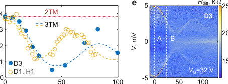

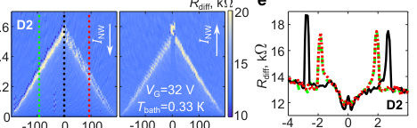
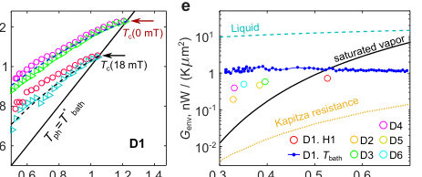
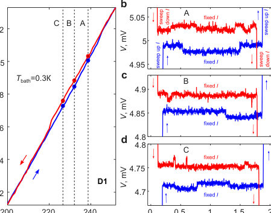
← Index · ← Previous · Next →
Authors: Quentin Courtade, Sotirios Fragkos, Dominique Descamps, Stéphane Petit, Yann Mairesse, Michael Schüler, Samuel Beaulieu
Type: both · Category: other · PDF: https://arxiv.org/pdf/2605.03663v1
Analysis basis: full PDF text, analyzed in chunks
Topic relevance: methods for driven-dissipative 2/5 · non-equilibrium dynamics 2/5
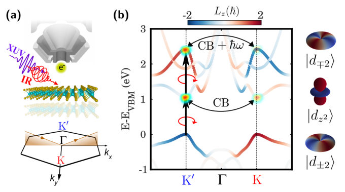
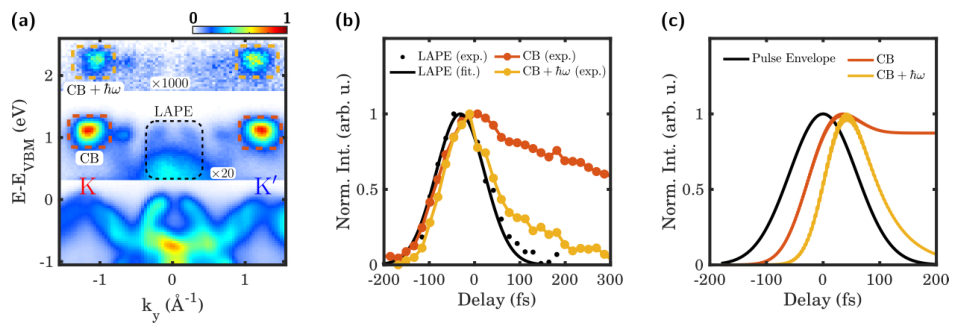
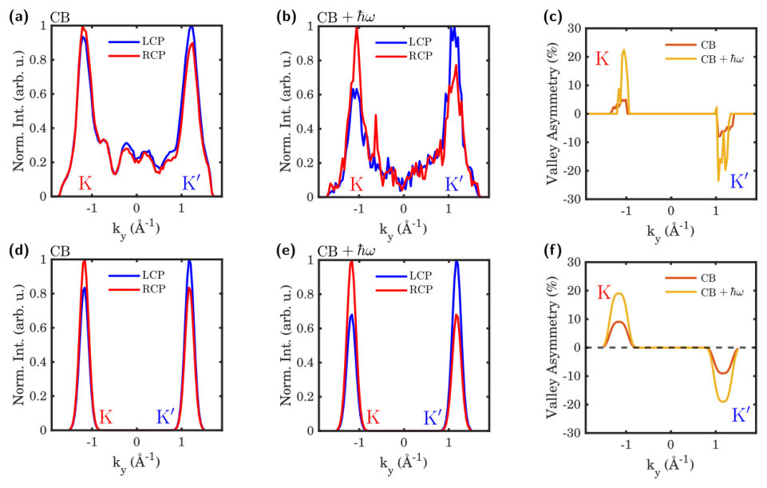
Summary. This paper shows that using a nonlinear, two-photon cascaded process in MoTe2 can create much stronger valley polarization in high-energy electronic states than standard single-photon methods. By leveraging a real intermediate state, the researchers found they could effectively 'double' the chiroptical selection rules. This discovery provides a new pathway for controlling valley degrees of freedom in ultrafast valleytronics.
Why it may be interesting. The use of a Lindblad master equation to model nonlinear, multi-photon light-matter interactions and the exploration of quantum-geometric selection rules in a driven-dissipative regime are highly relevant to researchers in quantum optics and open quantum systems.
Main problem. The study aims to understand how to enhance valley polarization in high-lying conduction bands of transition-metal dichalcogenides beyond the limits of conventional linear optical response.
Main result. The researchers demonstrate that a doubly resonant, cascaded nonlinear pathway via a real intermediate state significantly enhances valley polarization in high-lying states compared to the first conduction band.
Method. The study combines time- and angle-resolved extreme-ultraviolet photoemission spectroscopy (trARPES) with a time-dependent Lindblad master-equation formalism and DFT calculations.
Model / system. The physical system is monolayer 2H-MoTe2, modeled as a three-level ladder-type electronic structure (valence band, first conduction band, and a high-lying conduction band) using a Lindblad master equation to account for dynamics and dissipation.
Key observables. Energy- and momentum-resolved photoemission intensity, band-resolved local orbital angular momentum (Lz), and valley asymmetry (normalized difference between LCP and RCP pump intensities).
Important parameters / regimes. Pump wavelength (1.2 eV), XUV probe energy (21.6 eV), carrier lifetimes (ranging from ~47 fs to ~1.4 ps), and peak electric field strength (1.6 MV/cm).
Assumptions / limitations. The model assumes a three-level ladder system and uses a Lindblad formalism to approximate dissipative decay and intervalley scattering.
Figures summary. Figure 1 shows the experimental setup and orbital angular momentum textures; Figure 2 presents energy-momentum maps, time-resolved intensities, and Lindblad simulations; Figure 3 displays momentum distribution curves for LCP and RCP pumps.
Paper structure. The paper introduces the problem of valley polarization enhancement, describes the experimental trARPES setup and theoretical Lindblad framework, presents the observation of enhanced polarization in high-lying states, and provides a microscopic explanation based on cascaded selection rules.
The quantum geometric properties of Bloch electrons fundamentally govern light-matter interactions and optical selection rules in solids. In semiconducting transition-metal dichalcogenides, circularly polarized excitation near the band edge enables valley-selective interband transitions, providing the basis for valleytronics. While nonlinear optical protocols are being developed to manipulate and probe valley selection rules, they largely rely on band-edge transitions that proceed via virtual intermediate states. Here, we demonstrate a doubly resonant cascaded nonlinear pathway from the valence band to high-lying states, mediated by a real intermediate state whose participation substantially reshapes the valley optical selection rules. Using time- and angle-resolved extreme-ultraviolet photoemission spectroscopy in combination with a time-dependent Lindblad master-equation formalism, we show that this cascaded nonlinear photoexcitation produces a substantially enhanced high-lying valley polarization compared to the conventional linear optical response near the band edge. The extension of the quantum-geometry-based selection rules to the nonlinear regime and high-lying bands offers new perspectives for ultrafast valleytronics and should play a determinant role in strong-field-driven phenomena in quantum materials.
Authors: Uiseok Jeong, Esmaeil Taghizadeh Sisakht, Angel Rubio, Carsten A. Ullrich, Kyeong-Whan Kim, Noejung Park
Type: theory · Category: other · PDF: https://arxiv.org/pdf/2605.03539v1
Analysis basis: full PDF text, analyzed in chunks
Topic relevance: non-equilibrium dynamics 2/5
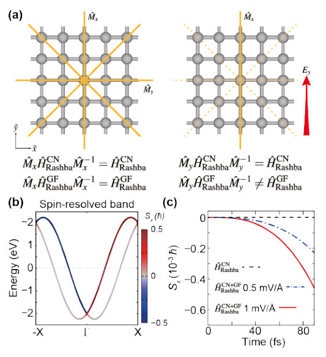
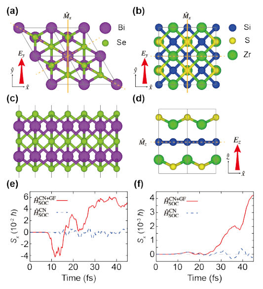
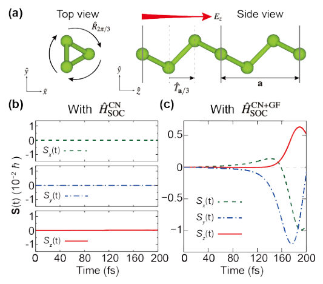
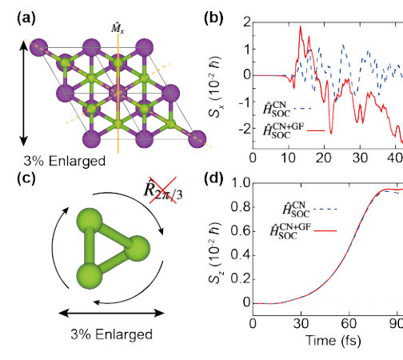
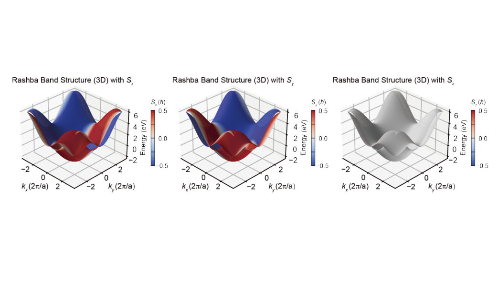
Summary. This paper demonstrates that the gauge-field component of spin-orbit coupling is crucial for capturing the true spin dynamics in materials under external electric fields. It shows that neglecting this term leads to an incorrect 'symmetry-frozen' description of spins, whereas including it reveals essential symmetry-breaking effects and spin accumulation.
Why it may be interesting. not directly relevant
Main problem. Investigating whether the gauge-field contribution to the spin-orbit coupling (SOC) Hamiltonian is essential for describing symmetry breaking and spin dynamics under external electromagnetic fields.
Main result. The gauge-field term is the primary driver of symmetry breaking in the SOC Hamiltonian; without it, spins remain 'symmetry-frozen,' whereas its inclusion allows for the development of dynamical spin states.
Method. Real-time time-dependent density functional theory (rt-TDDFT) using the Quantum ESPRESS and the Kleinman-Bylander scheme to incorporate gauge-field-dependent SOC into pseudopotentials.
Model / system. The study examines a 2D Rashba-type square lattice model and real materials including the topological insulator Bi2Se3, the Dirac semimetal ZrSiS, and a 1D trigonal Se chain.
Key observables. Spin expectation values (Sx, Sy, Sz), spin texture, spin-projected band structures, and spin accumulation.
Important parameters / regimes. External electric field strengths (e.g., 0.5 mV/A and 1.0 mV/A), presence/absence of the gauge-field term, and various crystal symmetries (mirror, glide, and screw-rotational).
Assumptions / limitations. The relativistic expansion of the electron Hamiltonian is considered up to the (v/c)^2 order.
Figures summary. Figure 1 illustrates mirror planes and compares spin evolution with and without the gauge-field term; Figure 2 shows the crystal structure of ZrSiS; other figures show spin-resolved 3D band structures.
Paper structure. The paper introduces the problem of gauge-invariance in SOC, defines the decomposed Hamiltonian, presents rt-TDDFT methodology, applies the framework to specific models and real materials (Bi2Se3, ZrSiS), and concludes with the necessity of the gauge-field term for nonequilibrium dynamics.
When a condensed-matter system is subjected to external electromagnetic fields, the gauge-invariant formulation of physical operators must explicitly incorporate the gauge-field contribution. However, in the context of spin-orbit coupling (SOC), this gauge-field term is often regarded as negligible or merely additive compared to the canonical SOC, which is typically localized near atomic cores. Here, we demonstrate that the symmetry breaking and consequent spin dynamics are governed by the gauge-field term, without which the spins remain symmetry-constrained. We perform real-time time-dependent density functional theory calculations to investigate spin-orbit dynamics, focusing on representative cases with mirror, glide, and screw-rotational symmetry. We demonstrate that when the gauge-field term in the time-dependent Hamiltonian perturbs the symmetry of the canonical term, a dynamical spin state gradually develops during the time evolution, beyond the symmetry-frozen states. We suggest that, for nonequilibrium spin-orbit dynamics, the gauge-invariant formulation of SOC is not only formally required but also quantitatively essential, even for a weak external field.
Authors: Yue Yu
Type: theory · Category: strongly correlated electrons · PDF: https://arxiv.org/pdf/2605.03026v1
Analysis basis: full PDF text, analyzed in chunks
Topic relevance: non-equilibrium dynamics 2/5
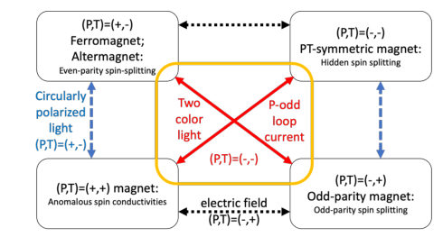
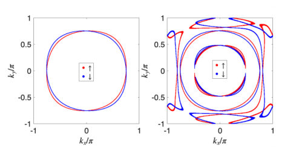
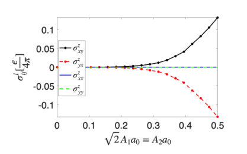
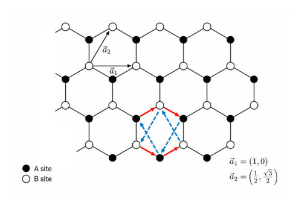
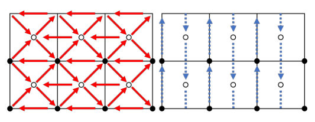
Summary. This paper proposes a method to engineer new spin-splitting symmetries in altermagnets using light or loop-current orders. By inducing odd-parity spin textures, it enables new ways to manipulate spin-polarized currents for spintronic applications. The work also predicts a dissipationless spin Hall effect in driven PT-symmetric magnets.
Why it may be interesting. not directly relevant
Main problem. Developing a theoretical framework to induce tunable odd-parity spin splittings in collinear altermagnets using two-color light driving or coupling to loop-current orders.
Main result. The study demonstrates that two-color light driving or P-odd loop-current orders can create mixed-parity spin textures in altermagnets and induce a nonrelativistic dissipationless anomalous spin Hall conductivity in PT-symmetric magnets.
Method. The work employs group-theoretical analysis, Landau theory, and microscopic Floquet theory (using the high-frequency and weak-intensity limits) alongside the Kubo formula for transport properties.
Model / system. The study focuses on collinear altermagnets (P,T = +, -) and PT-symmetric magnets (P,T = -, -) on square (D4h) and honeycomb (D6h) lattices, using a two-sublattice Hamiltonian with k-dependent hopping and exchange interactions.
Key observables. Momentum-dependent spin splitting (even and odd parity), spin-polarized currents, and dissipationless anomalous spin Hall conductivity.
Important parameters / regimes. Two-color light driving with a 2:1 frequency ratio, relative phase between light components, high-frequency limit (omega >> bandwidth), and weak light intensity.
Assumptions / limitations. Assumes the high-frequency limit, small driving amplitude (A << 1), and collinear spin ordering along the z-axis.
Figures summary. Figures show Fermi surface evolution (undriven vs. driven), the honeycomb lattice structure for PT-symmetric magnets, and different types of loop-current orders in square lattices.
Paper structure. The paper introduces the problem of spin-splitting symmetry, develops a theoretical framework using group theory and Floquet theory, analyzes the response of altermagnets and PT-symmetric magnets to light and loop-currents, and concludes with transport property calculations.
Momentum-dependent spin splitting and its relation to inversion ($P$) and time-reversal ($T$) symmetries are central to nonrelativistic spintronics. Representative examples include collinear altermagnets with $(P,T)=(+,-)$ and non-collinear odd-parity magnets with $(P,T)=(-,+)$. In this work, we develop a theoretical framework to induce odd-parity spin splittings in the more abundant collinear altermagnets through two mechanisms: driving by a two-color linearly polarized light field or coupling to a $P$-odd loop-current order. Properly phase-locked two-color driving induces a static $(P,T)=(-,-)$ order, symmetry-equivalent to a translationally invariant $P$-odd loop-current order. Coupling this order to an altermagnet produces a controllable mixed-parity spin texture, opening new avenues for the electrical and optical manipulation of spin-polarized currents in spintronics applications. The same mechanism applied to a collinear $PT$-symmetric magnet induces a distinct $(P,T)=(+,+)$ state with a nonrelativistic dissipationless anomalous spin Hall conductivity. We present group-theory and microscopic Floquet theory to highlight the emergent responses.
Authors: Niklas Hofmann, Leonard Weigl, Johannes Gradl, Stiven Forti, Domenica Convertino, Camilla Coletti, Isabella Gierz
Type: experiment · Category: other · PDF: https://arxiv.org/pdf/2605.03480v1
Analysis basis: full PDF text, analyzed in chunks
Topic relevance: non-equilibrium dynamics 1/5
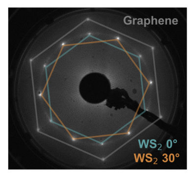
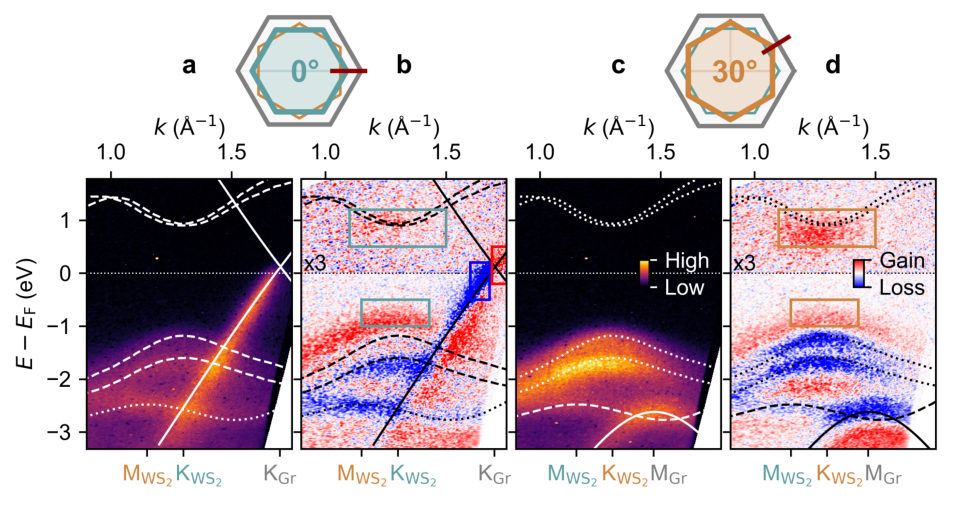
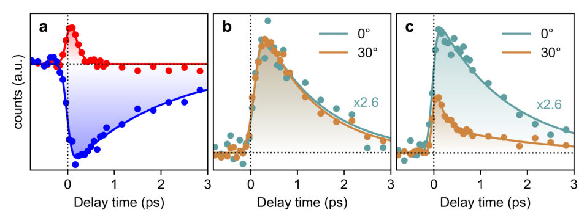
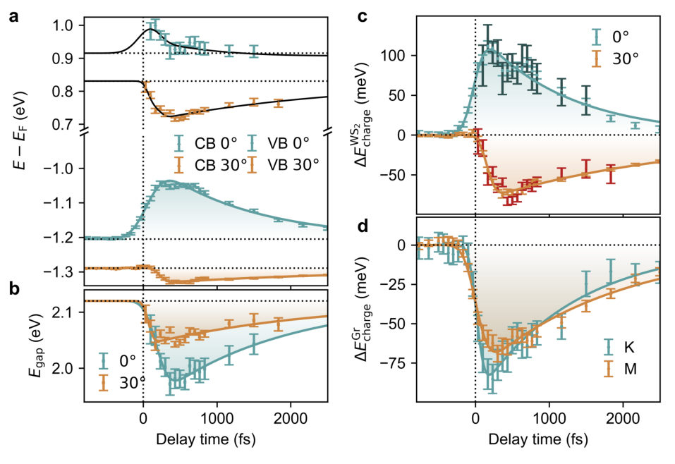
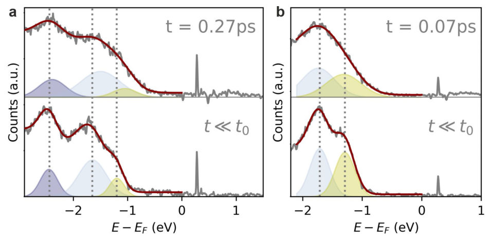
Summary. This paper demonstrates that the twist angle is a critical control parameter for charge separation in WS2-graphene heterostructures. Using trARPES, the authors show that while 0-degree alignment enables efficient separation, a 30-degree misalignment leads to simultaneous electron and hole transfer. These findings provide essential insights for engineering next-generation optoelectronic and photovoltaic devices.
Why it may be interesting. not directly relevant
Main problem. The study investigates how the twist angle between layers in van der Waals heterostructures influences the efficiency of ultrafast charge separation.
Main result. At a 0 degree twist angle, efficient charge separation is observed, whereas at 30 degrees, electron and hole transfer occur at similar rates, preventing separation. The electron transfer rate itself appears independent of the twist angle, potentially due to tunneling through sulfur vacancies.
Method. The researchers used time- and angle-resolved photoemission spectroscopy (trARPES) to probe population dynamics and band shifts following photoexcitation.
Model / system. The physical system consists of epitaxially grown WS2-graphene heterostructures with twist angles of 0 and 30 degrees, where WS2 islands are grown via CVD on hydrogen-intercalated epitaxial graphene on SiC(0001).
Key observables. Population dynamics (gain/loss in graphene Dirac cone and WS2 bands), transient band gap renormalization, and transient band shifts (upward/downward shifts).
Important parameters / regimes. Twist angles of 0 and 30 degrees; pump photon energy of 3.1 eV; temporal resolution of 200 fs; energy resolution of 350 meV.
Assumptions / limitations. Fitting of WS2 valence bands assumed fixed energy differences between spin-split bands and fixed spectral weights based on equilibrium data.
Figures summary. Fig 1 shows LEED data for twist angle confirmation; Fig 2 displays equilibrium and pump-induced ARPES spectra; Fig 3 shows population dynamics and Dirac cone changes; Fig 4 tracks evolution of band positions and charging shifts; Figs 5-7 detail the methodology for extracting band positions from EDCs and MDCs.
Paper structure. The paper begins with structural characterization via LEED, moves to the presentation of trARPES spectral snapshots, analyzes population dynamics and band shifts for both twist angles, compares results to theoretical energy barrier models, and concludes with a discussion on the mechanism of charge transfer.
Van der Waals (vdW) heterostructures, formed by stacking two-dimensional materials, offer highly tunable electronic and optical properties, with the twist angle between layers acting as a critical tuning parameter. While its impact on moiré patterns, band structure, and correlated states is well-established, the influence of twist angle on ultrafast charge transfer remains controversial. Here, we employ time- and angle-resolved photoemission spectroscopy (trARPES) to directly probe ultrafast charge transfer in epitaxially grown WS\textsubscript{2}-graphene heterostructures with twist angles of 0$^{\circ}$ and 30$^{\circ}$. Upon photoexcitation at $\hbarω= 3.1\,\mathrm{eV}$, we observe efficient charge separation at 0$^{\circ}$, while at 30$^{\circ}$, electron and hole transfer occur at similar rates. Our results highlight the crucial role of the twist angle in controlling charge separation efficiency, offering valuable insights for designing vdW heterostructures for applications in photovoltaics and optoelectronics.
Authors: Wenqin Chen, Kaijie Yang, Ting Cao, Shi-Zeng Lin, Jiabin Yu, Di Xiao
Type: theory · Category: strongly correlated electrons · PDF: https://arxiv.org/pdf/2605.03133v1
Analysis basis: full PDF text, analyzed in chunks
Topic relevance: entanglement & information structure 1/5
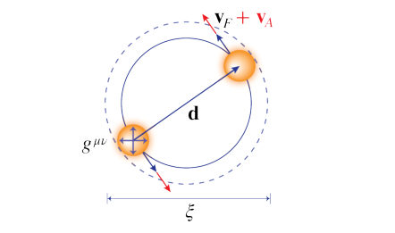
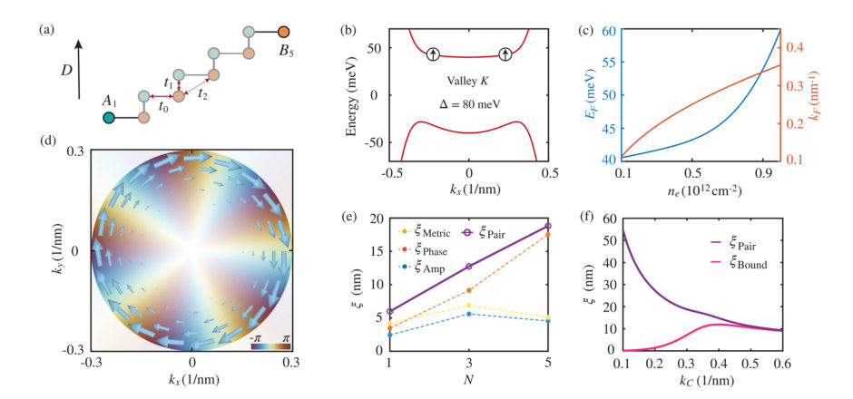
Summary. This paper develops a new framework to calculate the size of Cooper pairs in flat-band superconductors by analyzing the quantum geometric quadrupole moment. It reveals that Berry curvature and the quantum metric impose a fundamental lower bound on the pair size, which can dominate the coherence length in systems like rhombohedral graphene. This identifies quantum geometry as a central driver of the microscopic length scales in correlated electronic systems.
Why it may be interesting. It provides a deep connection between topological invariants (Berry curvature/metric) and the microscopic spatial structure of many-body bound states, which is relevant to understanding the stability and scale of many-body correlations.
Main problem. Determining the fundamental length scale (size) of Cooper pairs in flat-band superconductors where conventional BCS theory fails due to quenched band dispersion.
Main result. The authors establish that the Cooper pair size is determined by a geometric lower bound arising from the quantum metric and Berry curvature, with the latter providing a significant contribution when time-revanl symmetry is broken.
Method. A momentum-space derivation using a band-projected BCS framework, decomposing the pair quadrupole moment into amplitude, quantum metric, and phase structure components.
Model / system. The framework is applied to (nearly) flat-band systems, specifically focusing on rhombohedral graphene and twisted moiré systems using a two-band effective Hamiltonian.
Key observables. Cooper pair size (trace of the quadrupole moment), pair Berry curvature, pair quantum metric, and pair geometric dipole.
Important parameters / regimes. Berry curvature, quantum metric, winding number, momentum cutoff, and the presence/absence of time-reversal symmetry.
Assumptions / limitations. The theory assumes a band-projected BCS framework for intraband pairing, neglects band dispersion in the limit of local attractive interaction, and utilizes a tight-binding approximation.
Figures summary. Figure 1 provides a semiclassical illustration of the two-body bound state and the roles of anomalous velocity and intrinsic spread; Figure 2 shows the two-band model for rhombohedral graphene and its low-energy dispersion.
Paper structure. The paper introduces the problem of pair size in flat bands, develops a formal mathematical framework for the pair quadrupole moment, decomposes the pair size into three gauge-invariant components, establishes a geometric lower bound, and validates the theory using rhombohedral graphene and the 'Berry trashcan' model.
The size of Cooper pairs defines a fundamental length scale of superconductivity, conventionally set by band dispersion and the superconducting gap. This picture breaks down in flat bands, where quenched dispersion makes quantum geometry essential. Here we develop a general framework based on the Cooper pair quadrupole moment, whose trace gives the pair size. The framework holds for both dispersive and flat-band cases, and provides a unified description of the geometric origin of this length scale. In particular, when time-reversal symmetry is broken, Berry curvature enters through the phase structure of the pair wavefunction and gives an essential contribution absent from previous quantum-metric theories. Together, Berry curvature and quantum metric impose a geometric lower bound on the pair size. Applying this framework to rhombohedral graphene, we find that the Berry-curvature-induced contribution can dominate and yields pair sizes comparable to experimentally inferred coherence lengths. These results identify Berry curvature as a central geometric ingredient controlling the microscopic length scale of superconductivity.
Authors: E. V. Shpagina, E. S. Tikhonov, D. Ruhstorfer, G. Koblmueller, V. S. Khrapai
Type: experiment · Category: other · PDF: https://arxiv.org/pdf/2605.03139v1
Analysis basis: full PDF text, analyzed in chunks
Topic relevance: non-equilibrium dynamics 1/5




Summary. This paper demonstrates that superconducting islands on suspended nanowires experience a thermal bottleneck where phonons cannot efficiently cool to the bath temperature. By applying a three-temperature model, the authors show that heat is primarily dissipated through the surrounding 3He environment rather than through the nanowire itself.
Why it may be interesting. not directly relevant
Main problem. The study investigates the heat balance and thermal relaxation in superconducting islands on freely suspended InAs nanowires, specifically addressing why the standard two-temperature model fails to describe the observed thermal dynamics.
Main result. The researchers identified a thermal relaxation bottleneck where phonon heating occurs because the S-island's phonon temperature exceeds the bath temperature, a phenomenon best described by a three-temperature model (3TM) involving environmental cooling via a 3He wetting layer.
Method. The study uses Joule spectroscopy to trace the superconductor-to-normal transition and Johnson noise thermometry to calibrate temperatures, while using mesoscopic heaters to vary the effective bath temperature.
Model / system. The system consists of epitaxial Al/InAs nanowires with an Al shell, freely suspended above a substrate and immersed in a 3He environment. The thermal dynamics are analyzed using a Three-Temperature Model (3TM) that accounts for electron, phonon, and environmental temperature gradients.
Key observables. Critical Joule power (Pj_c), differential resistance (R_diff), noise temperature (T_N), and superconducting critical temperature (T_c) as a function of magnetic field.
Important parameters / regimes. Al shell thickness (42 nm), InAs core diameter (~150 nm), electron-phonon coupling strength (Sigma_e-ph), and environmental thermal conductance (Sigma_env).
Assumptions / limitations. Assumes the existence of a 3He wetting layer for cooling; assumes the phonon heat flux through the nanowire core is negligible compared to environmental cooling.
Figures summary. Fig 1 shows the device layout, heater arrangement, and I-V curves demonstrating the S-N transition. Supplemental figures include SEM images, magnetic field-dependent resistance plots, and plots showing the non-steady-state behavior of critical power.
Paper structure. The paper introduces the thermal bottleneck problem, describes the experimental platform and Joule spectroscopy method, presents the failure of the 2TM and the success of the 3TM, analyzes the cooling mechanism via 3He, and concludes with a discussion on the wetting layer and non-steady-state effects.
We investigate the heat balance in superconducting islands (S-islands) formed in epitaxial Al/InAs nanowires (NWs) freely suspended above the substrate. We employ a Joule spectroscopy approach, which traces the superconductor-normal transition in the S-island mediated by heating of the neighboring InAs NW segments via transport current. The temperature of the surrounding 3He bath is varied with nearby mesoscopic heaters and controlled with the NW Johnson noise thermometry. The experiment reveals a substantial thermal relaxation bottleneck associated with the cooling via surrounding 3He, which gives rise to phonon heating in the S-island. Our results uncover the role of environmental cooling in non-equilibrium experiments in S-islands in NW devices.
Authors: M. Castillón, J. Segurado, I. Romero
Type: theory · Category: numerical methods · PDF: https://arxiv.org/pdf/2605.03731v1
Analysis basis: full PDF text, analyzed in chunks

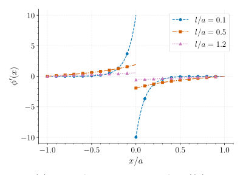

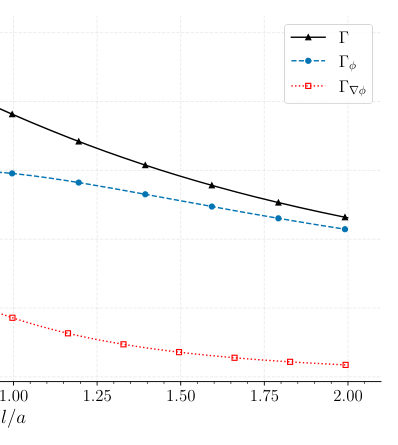
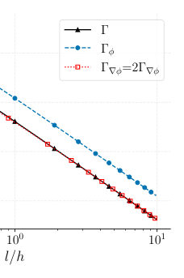
Summary. This paper introduces a new method to correct the overestimation of crack area in phase-field fracture simulations. By leveraging the stability of the gradient energy term, the proposed method provides a mesh-independent way to recover physical fracture properties and eliminate artificial force peaks. It is highly effective for complex 3D geometries where traditional correction methods fail.
Why it may be interesting. not directly relevant
Main problem. Phase-field fracture models suffer from an overestimation of crack area due to numerical artifacts like strain localization, where the phase-field variable artificially saturates across finite elements.
Main result. The authors propose the Double Gradient Correction Method (DGCM), which uses the principle of energy equipartition to accurately approximate the true crack area as twice the gradient-dependent energy, effectively suppressing non-physical peak force overshoots.
Method. A novel a posteriori correction framework (DGCM) based on the energy equipartition principle, where the crack area is calculated from the gradient term of the energy functional, which is less sensitive to mesh-induced saturation.
Model / system. The study utilizes phase-field fracture models, specifically the AT2 (and AT1) regularization formulations, applied to 1D, 2D, and 3D mechanical specimens such as center-cracked tension and compact tension specimens.
Key observables. Crack surface area, peak force during crack initiation, force-displacement response, stiffness, and energy release rates.
Important parameters / regimes. Phase-field length-scale parameter (l), mesh size (h), critical energy release rate (Gc), and the mesh resolution ratio (l/h).
Assumptions / limitations. The method assumes the principle of energy equipartition holds (valid as l approaches zero) and that the phase-field profile is sufficiently developed and free from boundary effects.
Figures summary. Figures illustrate the transition from sharp to diffuse cracks, energy component convergence, the distortion of phase-field profiles due to localization, and validation of the DGCM against LEFM and other correction methods in 2D and 3D.
Paper structure. The paper identifies the problem of crack area overestimation, introduces the mathematical principle of energy equipartition, derives the DGCM framework, validates it with 1D analytical benchmarks, compares it against existing mesh-based and skeletonization methods, and demonstrates its robustness in complex 2D and 3D simulations.
Phase-field fracture models are known to overestimate the crack area, a discrepancy that compromises the accuracy of fracture predictions. This issue stems from the diffuse crack representation and numerical artifacts, such as strain localization, where the phase-field variable artificially saturates across finite elements. Existing correction strategies, including mesh-dependent factors and skeletonization algorithms, have significant limitations. Mesh-based corrections are often unreliable for unstructured meshes, while skeletonization can be complex and inaccurate for intricate crack topologies, especially in three dimensions. This paper introduces a novel and robust framework to correct this overestimation. Our approach is founded on the principle of energy equipartition, where the energy contributions from the phase-field and its gradient are equal as the length-scale parameter approaches zero. Since numerical artifacts primarily affect the phase-field term while leaving the gradient term largely unperturbed, we propose that the crack area can be accurately approximated as twice the gradient-dependent energy. This method is inherently mesh-independent and readily applicable to the entire domain, including 3D simulations. The proposed methodology is validated against benchmarks with analytical solutions and compared with established methods like skeletonization to demonstrate its accuracy. It is then applied to complex geometries with curvilinear crack paths and evaluated in a three-dimensional simulation.
Authors: Tommy Ahlgren
Type: theory · Category: numerical methods · PDF: https://arxiv.org/pdf/2605.03529v1
Analysis basis: full PDF text, analyzed in chunks
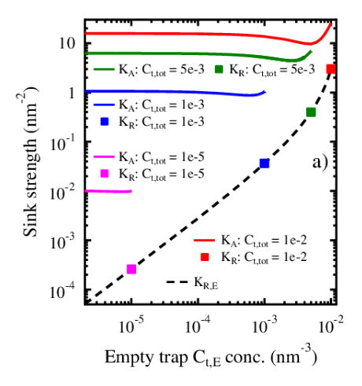
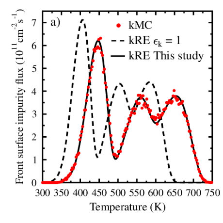
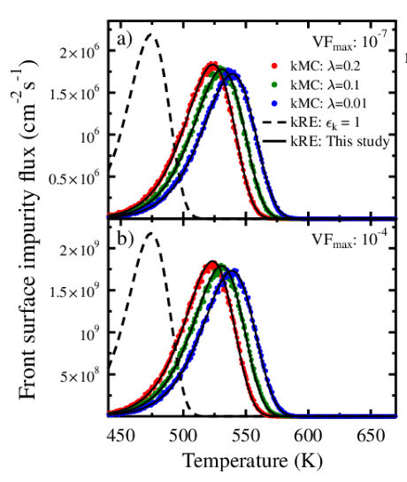
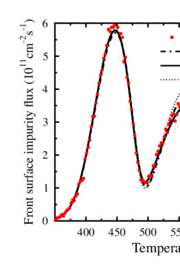
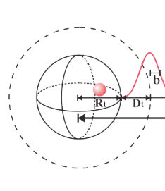
Summary. This paper introduces a new 'adjacent sink strength' formulation for Kinetic Rate Equation simulations to account for the high probability of defects being retrapped immediately after detrapping. By incorporating this effect, the model corrects significant errors in predicting thermal desorption peaks and ensures that fitted kinetic parameters remain physically consistent. This provides a more accurate multiscale bridge between atomistic simulations and experimental observations in materials science.
Why it may be interesting. not directly relevant
Main problem. Conventional Kinetic Rate Equation (kRE) models fail to capture the enhanced retrapping of defects/impurities released adjacent to traps, leading to systematic errors in predicting Thermal Desorption Spectroscopy (TDS) peak temperatures and physically inconsistent kinetic parameters.
Main result. The derivation of analytical expressions for 'adjacent sink strength' (Ka) allows kRE simulations to achieve quantitative agreement with kinetic Monte Carlo benchmarks and prevents the use of non-physical parameters when fitting experimental data.
Method. The author derives analytical expressions for adjacent sink strength including jump length corrections and implements a numerical iterative scheme (using Crank-Nicolson and Picard iteration) to solve the coupled nonlinear kREs.
Model / system. A mean-field Kinetic Rate Equation (kRE) framework modeling the evolution of defect and impurity concentrations (e.g., hydrogen/helium in solids) subject to diffusion, trapping, and detrapping.
Key observables. Thermal Desorption Spectroscopy (TDS) peak temperatures, impurity flux to the surface, and defect concentrations.
Important parameters / regimes. Trap radius (Rt), trap concentration (Ct), diffusion jump length (lambda), trapping energy (Et), detrapping frequency (nu_detr), and the sink strength enhancement factor (epsilon_k).
Assumptions / limitations. The analytical expressions assume spherical trap geometries, a small jump length limit (lambda/Rt <= 0.5), and a low total trap volume fraction (VF_tot <= 0.1).
Figures summary. Figure 1 compares random vs. adjacent sink strengths and shows the enhancement factor; Figure 2 shows TDS peaks with and without adjacent sink strengths; Figure 3 shows TDS peak shifts with concentration and jump length; Figure 6/7 show analytical vs. kMC sink strength comparisons.
Paper structure. Introduction of the kRE deficiency, derivation of the adjacent sink strength and jump length corrections, numerical implementation strategy, validation via kMC benchmarking, and discussion of parameter estimation risks.
Kinetic Rate Equation (kRE) modeling is widely used to simulate defect and impurity evolution in solids over experimentally relevant time and length scales. However, conventional kRE formulations include only random-position sink strengths, which adequately describe trapping of defects created at random lattice sites but fail to capture the enhanced retrapping of defects released directly adjacent to traps during detrapping or dissociation events. This omission leads to systematic errors, including underestimated thermal desorption (TDS) peak temperatures and incorrect kinetic parameters when fitting to experimental data. In this work, we derive for the first time analytical expressions for the adjacent sink strength, including correction for finite impurity diffusion jump length. We provide a practical implementation strategy for integrating these expressions into kRE simulations. Comparisons with kinetic Monte Carlo (kMC) benchmarks demonstrate that adjacent sink strengths dominate the retrapping probability and are essential for reproducing the correct temperature dependence of TDS release peaks. Simulations that employ only random sink strengths can still be tuned to match TDS spectra; however, the resulting fitted trapping energies, detrapping frequencies, and diffusion parameters are often physically inconsistent. The adjacent sink strength formulation introduced here significantly improves the predictive capability of kRE modeling, enabling accurate multiscale simulations of defect and impurity behavior in materials. This framework also establishes a foundation for future extensions, including adjacent sink strengths associated with extended defects such as dislocations and grain boundaries, offering new opportunities to resolve persistent discrepancies between experimental and simulated trapping energetics.
Authors: N P Vikas, Ranjit K Pradhan, Somdutta Mukherjee, Udai P Singh, Biplab K Patra, Ravi P Srivastava, Amritendu Roy
Type: both · Category: other · PDF: https://arxiv.org/pdf/2605.03673v1
Analysis basis: full PDF text, analyzed in chunks
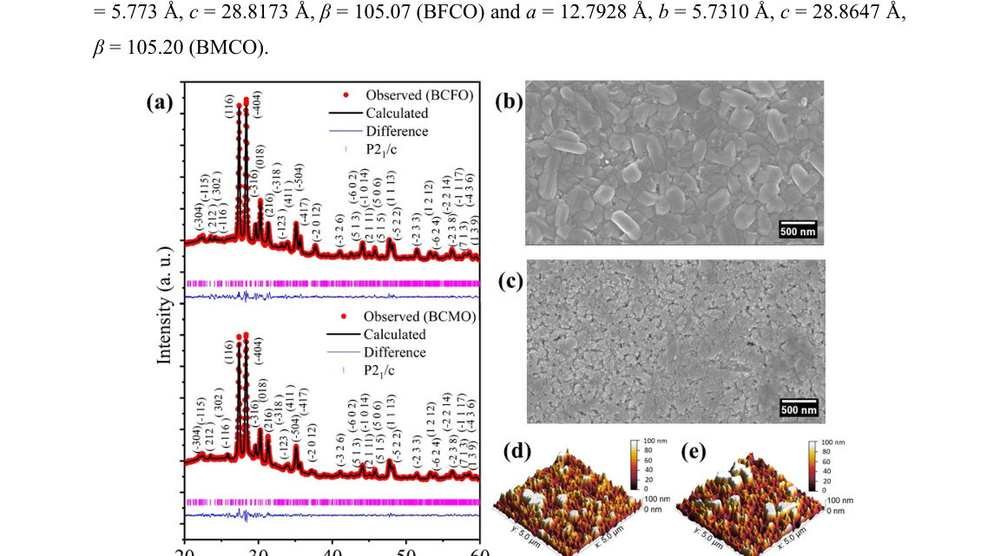
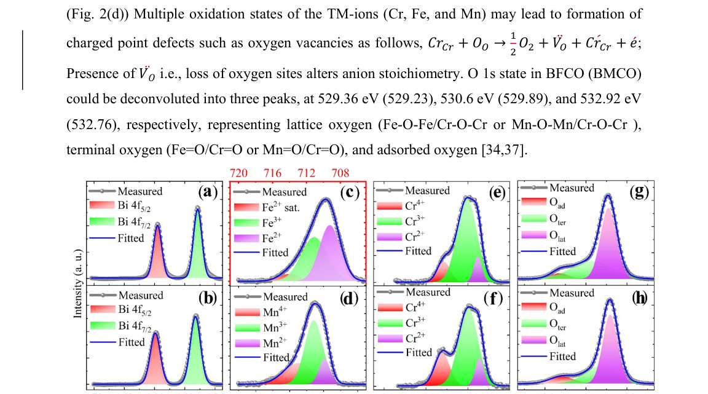
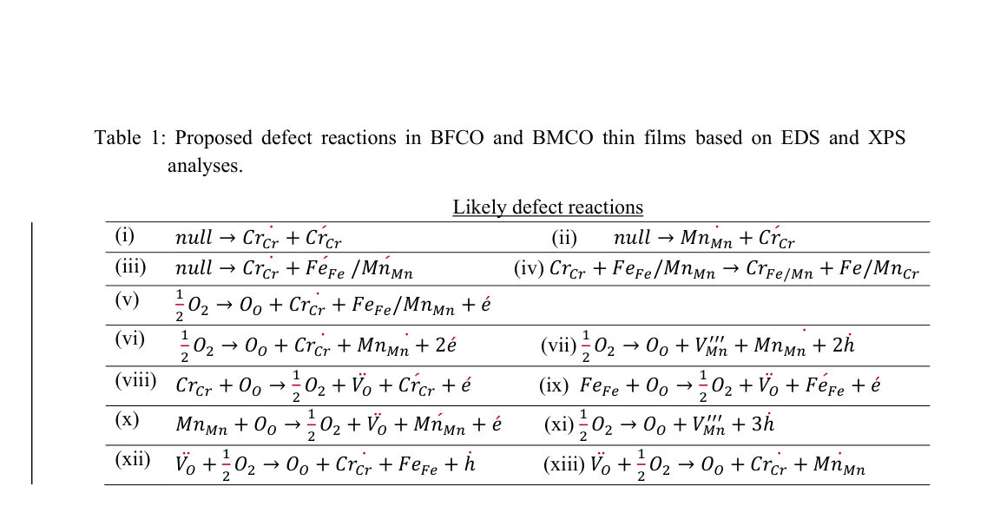
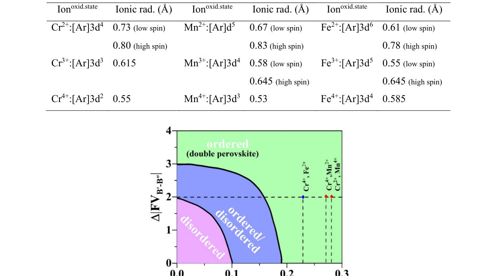
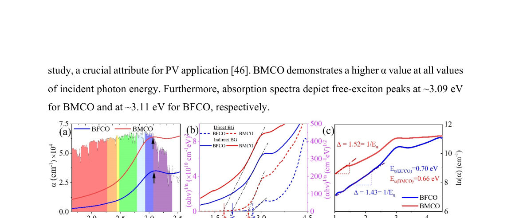
Summary. This paper investigates bismuth-based oxide double-perovskites as a non-toxic alternative to lead-based perovskites for solar cells. The researchers achieved visible-light absorption and demonstrated that while current efficiencies are modest, significant improvements are possible through defect engineering. The study provides a roadmap for optimizing these materials for efficient photovoltaics.
Why it may be interesting. not directly relevant
Main problem. Addressing the toxicity and instability of lead-halide perovskites by exploring bismuth-based oxide double-perovskites (Bi2FeCrO6 and Bi2MnCrO6) as stable, non-toxic alternatives for photovoltaics.
Main result. Demonstrated high optical absorption in the visible range and achieved power conversion efficiencies of 1.07% for BFCO and 3.56% for BMCO, with simulations predicting much higher efficiencies if defect density is controlled.
Method. Solution-based deposition and thermal annealing were used for synthesis, followed by structural (XRD, SEM, AFM, EDS), electronic (XPS, UPS, Mott-Schottky), and optical (UV-Vis) characterization, alongside SCAPS-1D numerical device simulations.
Model / system. The physical system consists of bismuth-based oxide double-perovskite thin films (Bi2FeCrO6 and Bi2MnCrO6) with monoclinic P21/c symmetry, integrated into a solar cell architecture: FTO/SnO2/Absorber/Spiro-OMeTAD/Ag.
Key observables. Optical absorption coefficient, bandgap energy, band-edge positions (VBM/CBM), carrier density, power conversion efficiency (PCE), and Urbach energy.
Important parameters / regimes. Absorption coefficient (10^4-10^5 cm^-1), carrier density (10^17-10^20 cm^-3), and defect density (Nt).
Assumptions / limitations. The numerical simulations assume that reducing defect density to approximately 10^13 cm^-3 can significantly boost efficiency.
Figures summary. The notes mention a schematic of the device architecture (Fig. 5b).
Paper structure. The paper introduces the problem of lead toxicity, describes the synthesis and structural characterization of the bismuth-based oxides, presents optoelectronic and device performance results, and concludes with numerical simulations predicting future optimization potential.
Lead poisoning and notorious ambient instability in lead-based halide perovskites pave the way for the exploration of alternative materials for affordable and efficient solar cell fabrication. An important prerequisite to this end is the optoelectronic evaluation of the proposed material. Here we report, optoelectronic characterization of Bi2FeCrO6 (BFCO) and Bi2MnCrO6 (BMCO) thin films vis-à-vis performance of photovoltaic cells. Solution-deposited thin films (350-450 nm) of the above compositions demonstrate a double-perovskite structure with monoclinic P21/c symmetry, albeit with mixed cation valences and deep-level defects. A thorough optoelectronic evaluation exhibits large optical absorption in the visible range (α ~ 104 -105 cm-1), and high carrier density, ~1017-20 cm-3. Ultraviolet photoelectron spectroscopy measurement allowed determination of the positions of the band-edges (valence band maximum and conduction band minimum), required for the selection of carrier transport layers. In its first, BMCO-based FTO/SnO2/BMCO/Spiro-OMeTAD/Ag solar cell produced a maximum 3.56% conversion efficiency. Using numerical simulation, we predict that with suitable defect control, the above conversion efficiency can increase significantly.
Authors: Seong-Hoon Jang, Yiwen Yao, Chuanyu Liu, Linda Zhang, Di Zhang, Xue Jia, Hung Ba Tran, Eric Jianfeng Cheng, Ryuhei Sato, Yusuke Ohashi, Toyoto Sato, Yusuke Hashimoto, Mark Allendorf, Nongnuch Artrith, Marcello Baricco, Andreas Borgschulte, Darren P. Broom, Ang Cao, Benjamin W. J. Chen, Lixin Chen, Ping Chen, Eun Seon Cho, Stefano Deledda, Zhao Ding, Martin Dornheim, Michael Felderhoff, Yaroslav Filinchuk, George E. Froudakis, Mingxia Gao, Thomas Gennett, Zaiping Guo, Ikutaro Hamada, Jason Hattrick-Simpers, Bjørn C. Hauback, Michael Hirscher, Torben R. Jensen, Baohua Jia, Hyoung Seop Kim, Takahiro Kondo, Kentaro Kutsukake, Xiao-Yan Li, Tongliang Liu, Piao Ma, Jianfeng Mao, Rana Mohtadi, Hyunchul Oh, Mark Paskevicius, Chris J. Pickard, Astrid Pundt, Long Qi, Anibal Ramirez-Cuesta, Hiroyuki Saitoh, Kaihang Shi, Aloysius Soon, Chenghua Sun, Chris Wolverton, Hiroshi Yabu, Weijie Yang, Zhenpeng Yao, Xuebin Yu, Jianxin Zou, Shouyi Hu, Panpan Zhou, Xi Lin, Zhigang Hu, Zhenhao Zhou, Pengfei Ou, Jiayu Peng, Shin-ichi Orimo, Hao Li
Type: both · Category: disordered systems and neural networks · PDF: https://arxiv.org/pdf/2605.03081v1
Analysis basis: full PDF text, analyzed in chunks
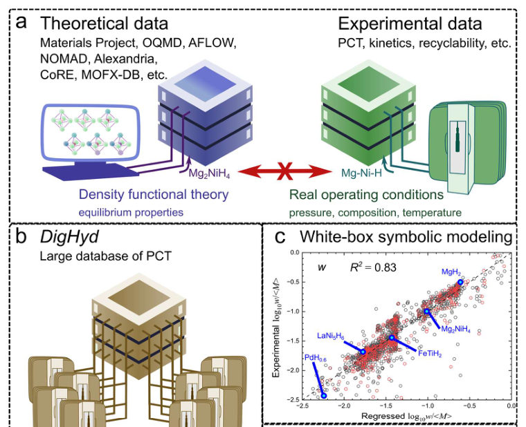
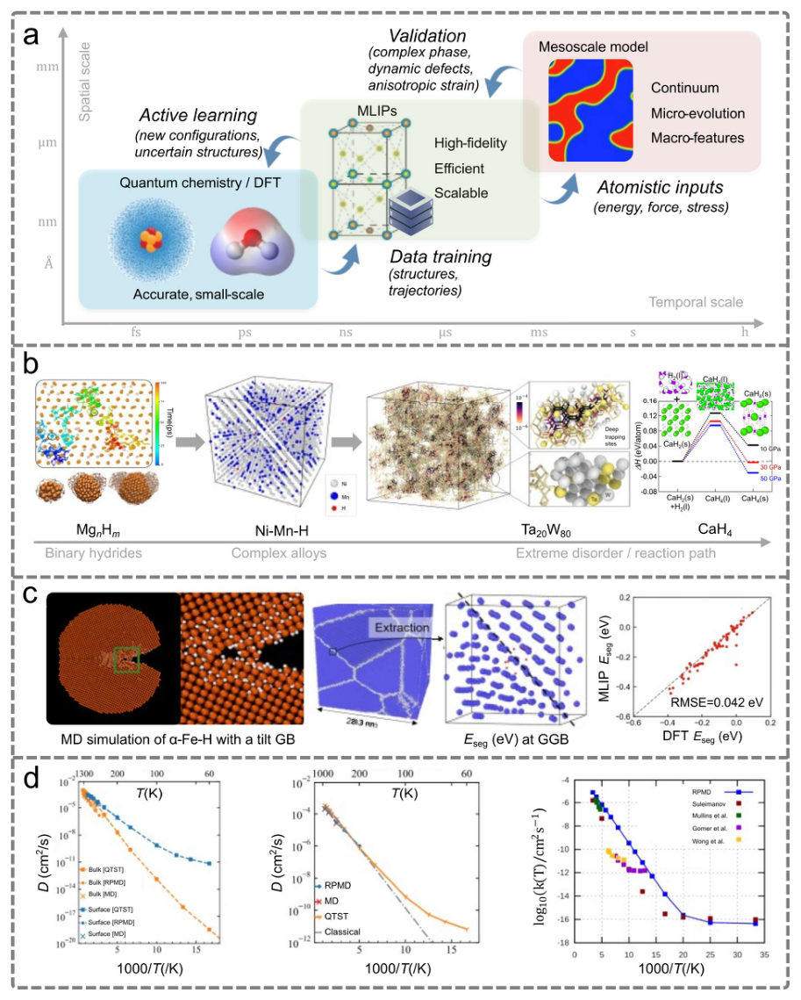
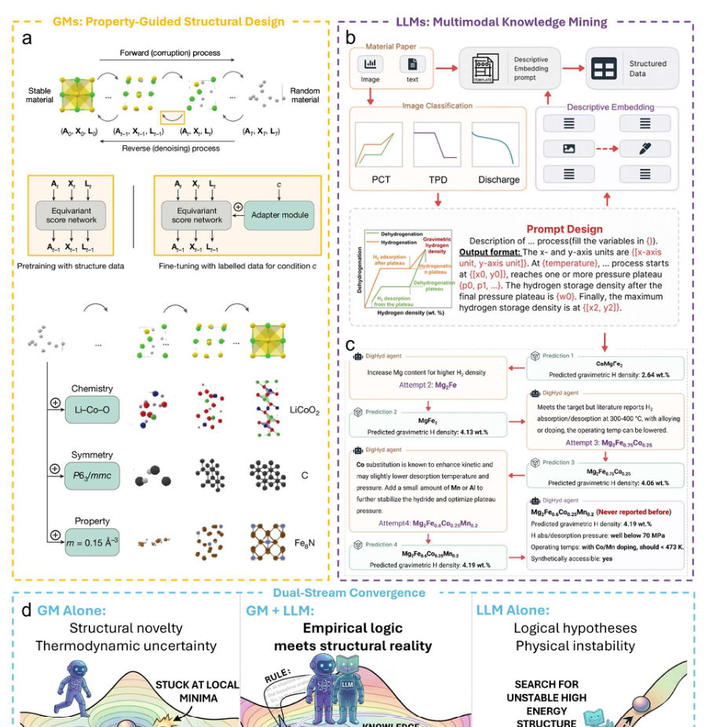
Summary. This paper proposes a new paradigm for materials discovery that moves beyond simple data-driven AI by embedding physical laws and experimental feedback into a closed-loop ecosystem. By integrating MLIPs, generative models, and LLMs, the authors aim to accelerate the development of efficient solid-state hydrogen storage materials.
Why it may be interesting. not directly relevant
Main problem. The discovery of high-performance solid-state hydrogen storage materials is hindered by fragmented data, a lack of physical consistency in AI models, and the difficulty of capturing multiscale, path-dependent dynamics like kinetics and degradation.
Main result. The authors propose a unified, physics-aware AI ecosystem that integrates coherent data infrastructure, physics-grounded modeling (such as MLIPs), and a closed-loop discovery paradigm using generative models and LLM agents.
Method. The framework combines Machine Learning Interatomic Potentials (MLIPs) for multiscale dynamics, Generative Models (GMs) for structural design, and Large Language Models (LLMs) for knowledge mining and enforcing physical constraints.
Model / system. The physical systems include solid-state hydrogen storage materials (HSMs) such as metal hydrides, nanoporous frameworks (MOFs, COFs), and high-entropy alloys, spanning scales from atomistic defects to macroscopic performance.
Key observables. Hydrogen uptake (gravimetric/volumetric), adsorption/desorption enthalpy and entropy, diffusion coefficients, pressure-composition isotherms, and phase transformation kinetics.
Important parameters / regimes. Thermodynamic windows (delta H), activation energy (Ea), temperature, pressure, and the spatiotemporal scales from electronic structure to mesoscale morphology.
Assumptions / limitations. The framework assumes that integrating physical constraints into AI architectures can overcome the limitations of purely data-driven models and that MLIPs can bridge the gap between DFT accuracy and experimental scales.
Figures summary. Figure 1 shows the disconnect between computational and experimental data and the proposed unified database; Figure 2 illustrates MLIP-driven multiscale modeling of hydrogen diffusion and microvoid nucleation; Figure 3 depicts the dual-stream GM-LLM architecture for inverse design; Figure 4 shows the closed-loop discovery workflow.
Paper structure. The paper identifies the bottlenecks in hydrogen storage research, proposes a unified physics-aware AI ecosystem, details the integration of data infrastructure, modeling (MLIPs), and generative AI, and concludes with a vision for autonomous, agent-driven discovery.
Hydrogen storage remains a central bottleneck for scalable hydrogen energy systems due to the multiscale and coupled nature of the thermodynamics, kinetics, and microstructural evolution of hydrogen storage materials (HSMs). Although artificial intelligence (AI) has accelerated materials discovery, current approaches remain constrained by fragmented data, limited physical consistency, and weak integration with experimental validation. Here, we propose a unified framework that integrates coherent data infrastructure, physics-grounded modeling, and AI-driven inverse design within a closed-loop discovery paradigm. By embedding physical constraints and experimental feedback, this approach enables adaptive, physically consistent optimization, thereby establishing a pathway toward autonomous, digital-twin-enabled discovery of HSMs.
Authors: Subha Dey, Rukma Nevgi, Suresh Chandra Joshi, Sourav Chowdhury, Nandana Bhattacharya, Kashish Kapoor, Tinku Dan, Subhadip Chowdhury, Sabyasachi Karmakar, S. D. Kaushik, Shibabrata Nandi, Christoph Klewe, Manuel Valvidares, Moritz Hoesch, George E. Sterbinsky, Srimanta Middey
Type: experiment · Category: disordered systems and neural networks · PDF: https://arxiv.org/pdf/2605.03444v1
Analysis basis: full PDF text, analyzed in chunks
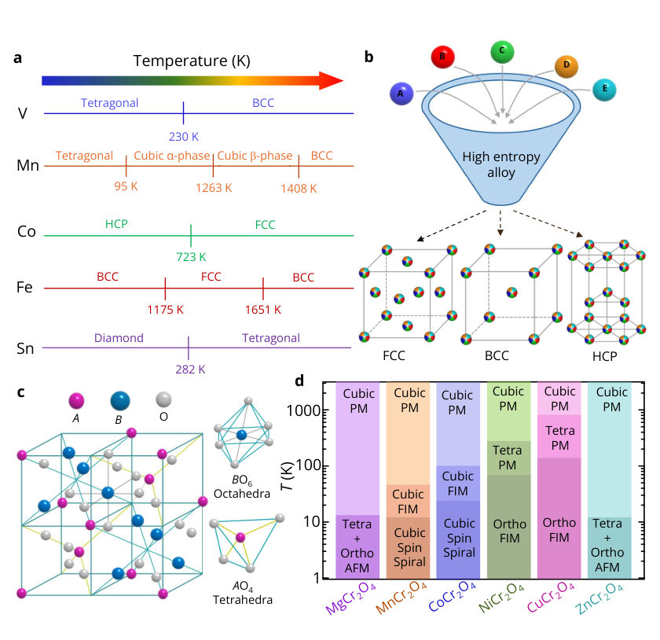
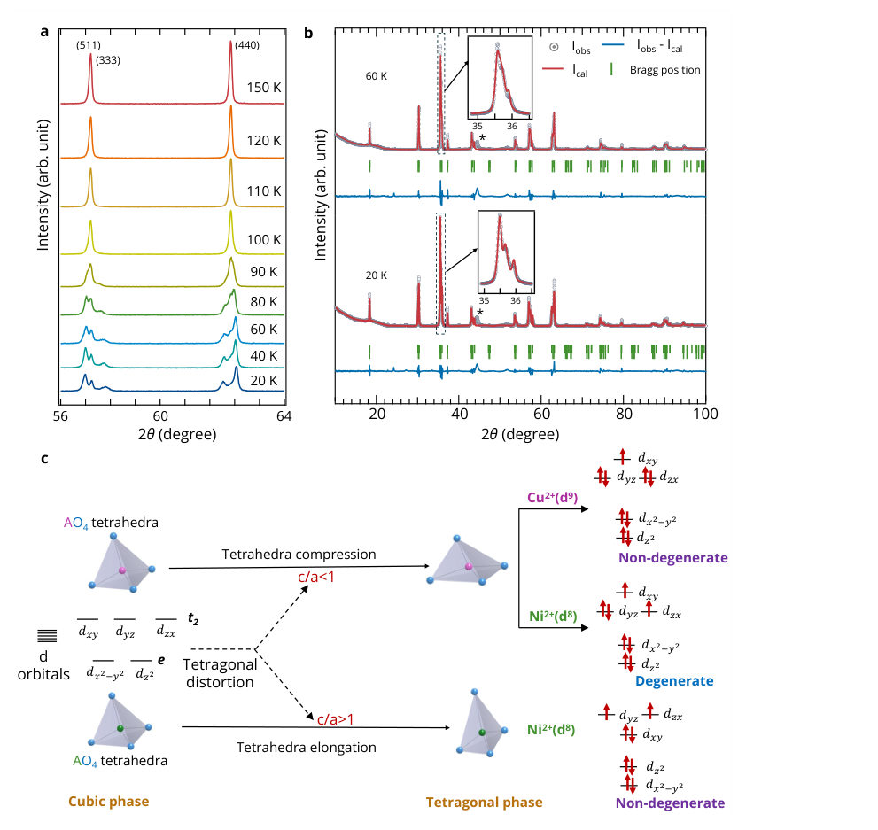
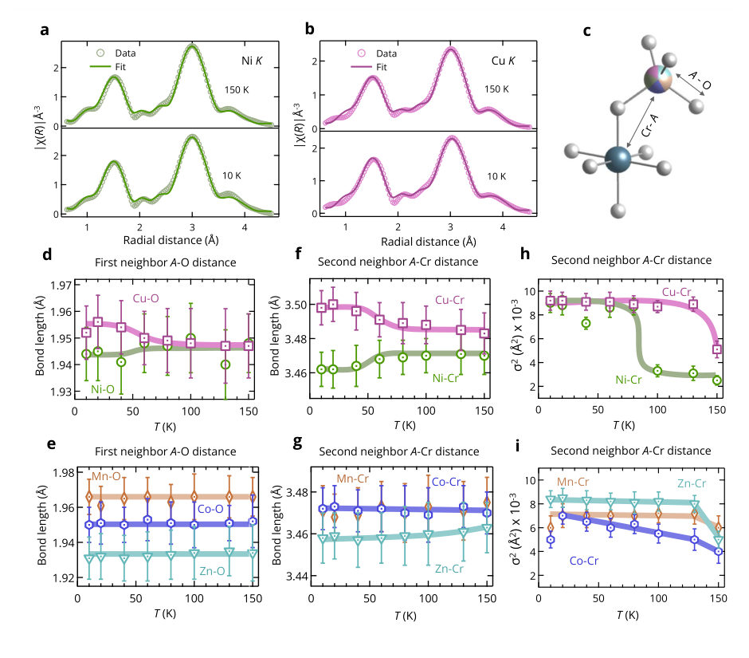
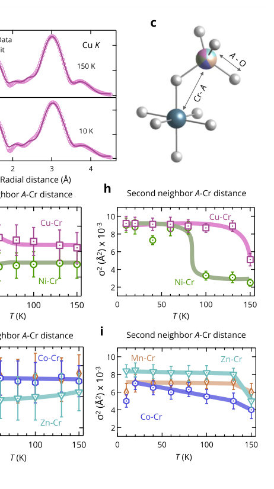
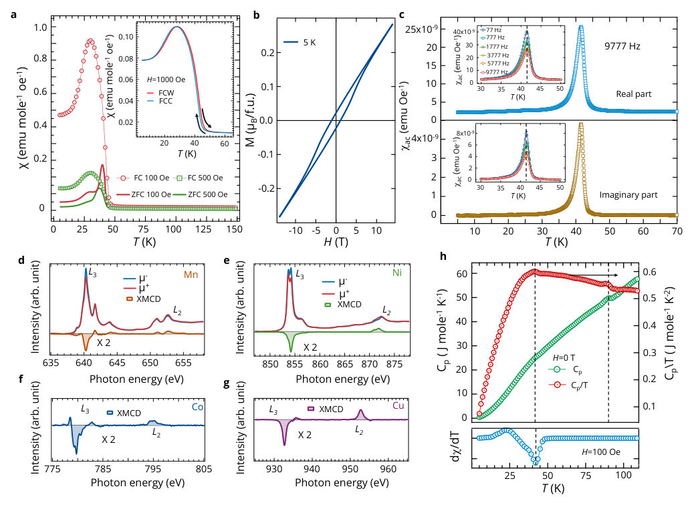
Summary. This paper shows that extreme chemical disorder does not necessarily suppress phase transitions in high-entropy oxides. By using Jahn-Teller active ions, the researchers achieved coupled structural and magnetic transitions driven by the competition between local distortions. This provides a new paradigm for tuning properties in complex, disordered materials.
Why it may be interesting. not directly relevant
Main problem. Determining whether the rich physics of coupled structural, magnetic, and electronic phase transitions can persist in highly chemically disordered high-entropy oxides (HEOs).
Main result. The authors demonstrate that targeted design of compositionally complex oxides can trigger symmetry-lowering transitions through 'cooperation via competition' between opposing local distortions from Jahn-Teller active ions.
Method. The study uses solid-state synthesis, powder X-ray diffraction (XRD), EXAFS for local structure, X-ray absorption spectroscopy (XAS), XMCD, and magnetic/heat capacity measurements.
Model / system. A series of compositionally complex chromate spinels with the general formula [A]Cr2O4, specifically focusing on the highly disordered [Mn0.2Co0.2Ni0.2Cu0.2Zn0.2]Cr2O4.
Key observables. Structural phase transitions (cubic to tetragonal to orthorhombic), magnetic ordering (ferrimagnetism), bond lengths, Debye-Waller factors, and heat capacity peaks.
Important parameters / regimes. Jahn-Teller active ions (Ni2+ and Cu2+), configurational entropy (S_config), and transition temperatures (100 K and 40 K).
Assumptions / limitations. The study assumes the chemical distribution is homogeneous at the micrometer and nanometer scales.
Figures summary. Figure 1 compares phase transitions in elemental vs. high-entropy systems; Figure 2 shows XRD-based phase evolution; Figure 3 presents EXAFS data on local bond length changes; Figure 4 displays magnetic susceptibility, magnetization loops, XMCD, and heat capacity data.
Paper structure. The paper introduces the problem of disorder-induced suppression of transitions, presents the synthesis and characterization of the complex spinel, details the structural and magnetic phase evolution, explains the local mechanism via Jahn-Teller distortions, and concludes with the implications for oxide design.
Structural phase transitions often couple to magnetic and electronic degrees of freedom, enabling emergent phenomena in solids. In high-entropy oxides (HEOs), which typically stabilize in highly symmetric cubic phases, such transitions are considered rare due to the extreme chemical disorder-analogous to the behavior observed in high-entropy alloys. This raises a fundamental question: can the rich physics of coupled phase transitions persist in such disordered systems? Here, we show that targeted design of compositionally complex oxides (CCOs) can trigger symmetry-lowering transitions, with spinel-type materials serving as a representative case. For instance, [Mn$_{0.2}$Co$_{0.2}$Ni$_{0.2}$Cu$_{0.2}$Zn$_{0.2}$]Cr$_2$O$_4$, having two Jahn-Teller (J-T) active ions, undergoes two successive coupled structural transitions upon cooling: an orbital-driven transition at 100 K and a magnetism-driven transition at 40 K. Systematic substitution of $A$-site cations reveals that both Ni and Cu are essential for these transitions. Element specific local structure investigations uncover distinct and opposing local distortions around Ni and Cu, while Mn, Co, and Zn remain largely undistorted. These results establish that CCOs can host coupled phase transitions through `cooperation via competition' among local distortions in a chemically disordered lattice. This discovery expands the design principles for complex oxides, introducing a new paradigm for tuning structural and functional properties in high-entropy systems beyond conventional symmetry constraints.
Authors: Marta García Olmos, David Martín Tejedor, Mario Amado, Yuriko Baba, Rafael A. Molina
Type: theory · Category: other · PDF: https://arxiv.org/pdf/2605.03459v1
Analysis basis: full PDF text, analyzed in chunks
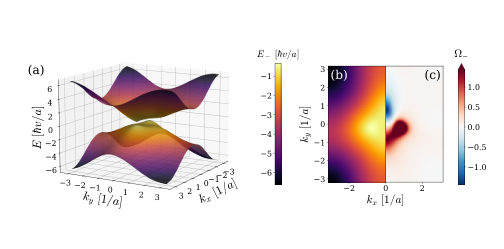
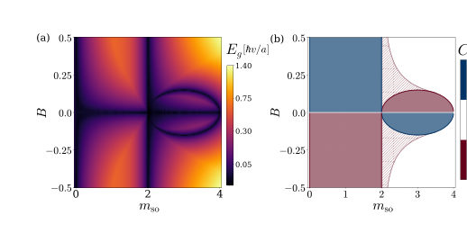
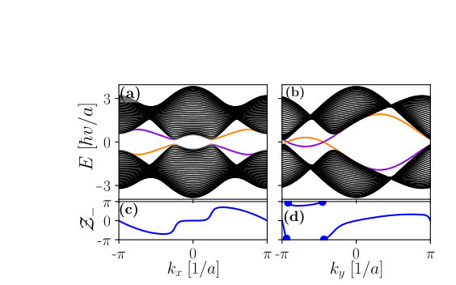
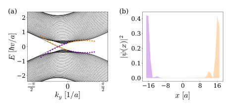
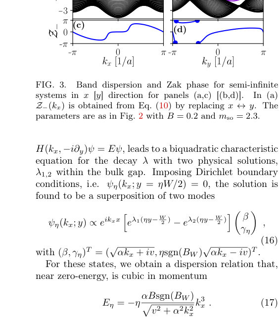
Summary. This paper demonstrates that unconventional bulk band structures, specifically semi-Dirac types, can fundamentally change the nature of topological boundary excitations from linear to cubic dispersion. This finding provides a new way to engineer nonstandard chiral edge dynamics in synthetic quantum systems like metamaterials or cold atoms.
Why it may be interesting. not directly relevant
Main problem. Investigating whether the standard paradigm of linear dispersion in topological edge states can be altered by using anisotropic semi-Dirac bulk band structures.
Main result. The authors discover that in a semi-Dirac Chern insulator, edge states parallel to the x-axis exhibit a cubic dispersion relation (E(k) proportional to k^3), contrasting with the standard linear dispersion.
Method. The study uses an analytical mass-domain-wall approach in a semi-infinite geometry, a dimensional reduction to a 1D SSH-like model, and numerical diagonalization of tight-binding ribbons.
Model / system. A 2D semi-Dirac Chern insulator described by a minimal two-band lattice model on a square Bravais lattice with an anisotropic Bloch Hamiltonian.
Key observables. Chern number (C), Berry curvature, Zak phase (Z), edge-state dispersion E(k), and group velocity.
Important parameters / regimes. Mass parameter (m_so), quadratic corrections (B, B_W), Fermi velocity (v), and anisotropy coupling (alpha).
Assumptions / limitations. The analytical derivation assumes a semi-infinite half-plane geometry where the system size significantly exceeds the decay length of the edge states.
Figures summary. Figure 1 shows the bulk energy spectrum and band projection; Figure 3 displays band dispersion and Zak phase for semi-infinite systems; Figure 4 and 5 show numerical results for nanoribbon edge dispersion and probability density.
Paper structure. The paper introduces the semi-Dirac model, analyzes the topological phase diagram, derives the analytical edge-state dispersion using a mass-domain-wall approach, validates results via numerical ribbon diagonalization, and discusses potential experimental platforms.
Topological edge states in Chern insulators are typically characterized by a linear dispersion relation inherited from the Dirac structure of the bulk Hamiltonian. Here we show that this paradigm can be fundamentally altered in systems with anisotropic semi-Dirac band structures. We introduce a minimal two-band lattice model realizing a semi-Dirac Chern insulator and determine its topological phase diagram analytically. Using a mass-domain-wall approach in a semi-infinite geometry, we derive an explicit expression for the chiral edge states and find that their low-energy dispersion scales cubically with momentum, $E(k)\propto k^3$. Numerical diagonalization of the corresponding tight-binding ribbon confirms the analytical prediction. Our results demonstrate that unconventional bulk band structures can produce qualitatively different boundary excitations, providing a route to engineering nonstandard chiral edge dynamics in topological materials and synthetic quantum systems.
Authors: Wael Othman, Ibrahim Alghoul, K-F. Aguey-Zinsou, Nacir Tit, Tanveer Hussain
Type: theory · Category: other · PDF: https://arxiv.org/pdf/2605.03738v1
Analysis basis: full PDF text, analyzed in chunks
Summary. The study proposes a method to engineer 2D BeN2 monolayers with beryllium vacancies and alkali metal decorations to create a high-capacity, reversible hydrogen storage medium. The researchers demonstrate that the Li-decorated system can exceed DOE-mandated storage targets under near-ambient conditions. This provides a scalable design strategy for using polar lightweight materials in energy storage applications.
Why it may be interesting. not directly relevant
Main problem. The challenge of developing a reversible, high-capacity hydrogen storage material that meets the US Department of Energy (DOE) target of 6.50 wt% while avoiding the safety risks of high-pressure or cryogenic storage.
Main result. A defect-engineered BeN2 monolayer decorated with Li, Na, or K atoms enables high-capacity hydrogen storage, with the Li-decorated system achieving an effective reversible capacity of 7.69 wt%, exceeding the DOE target.
Method. Density Functional Theory (DFT) using the VASP package, Ab Initio Molecular Dynamics (AIMD) at 400 K, Bader charge analysis, and statistical thermodynamic modeling using the grand canonical partition function.
Model / system. A 2D beryllium dinitride (BeN2) monolayer containing beryllium vacancies (BeN2:2VBe) functionalized with light alkali metal atoms (Li, Na, or K) and interacting with H2 molecules.
Key observables. Gravimetric hydrogen storage capacity (wt%), adsorption energy (Eads), metal-vacancy binding energy (Ebind), and electronic band gap (Eg).
Important parameters / regimes. Temperature (400 K for stability, 25 C/100 C for adsorption/desorption), pressure (30 atm/3 atm), and the critical adsorption energy threshold of 0.15 eV.
Assumptions / limitations. Use of the GGA-PBE functional with DFT-D3 corrections; use of the Born-Oppenheimer frozen-lattice approximation for theoretical capacity calculations at 0 K.
Figures summary. Figure 1 shows atomic structures and electronic band structures/DOS; Figure 7 shows the trend of adsorption energy vs. H2 number and theoretical capacities; Figure 8 presents an N-P-T phase diagram for hydrogen molecules.
Paper structure. The paper introduces the hydrogen storage problem, describes the structural design of the defect-engineered BeN2, details the computational methods, presents results on stability and electronic properties, analyzes hydrogen adsorption energetics and capacity, and concludes with thermodynamic performance under practical conditions.
Hydrogen (H2) possesses the highest gravimetric energy density of any chemical fuel and is the most abundant element in the universe. However, its extremely low volumetric energy density at standard conditions imposes a fundamental materials challenge for safe, efficient, and reversible storage. Here, we report a defect-engineered 2D beryllium dinitride (BeN2) monolayer that enables stable light-metal functionalization for high-capacity H2 storage. A 2 x 2 supercell containing two intrinsic beryllium vacancies accommodates four Li, Na, and K atoms without clustering, exhibiting strong average metal-vacancy binding energies of -3.80, -2.94, and -3.18 eV, respectively. Ab initio molecular dynamics simulations at 400 K confirm the thermal stability of the metal-decorated frameworks and the suppression of metal aggregation. The vacancy-stabilized alkali-metal centers generate localized charge polarization that facilitates the adsorption of up to 20 H2 molecules per supercell, with average adsorption energies of -0.182 eV (Li), -0.191 eV (Na), and -0.171 eV (K), making the adsorption reversible under near-ambient conditions. The corresponding gravimetric H2 storage capacities reach 11.64, 9.82, and 8.49 wt percent, respectively, significantly exceeding the US Department of Energy (DOE) ultimate target of 6.50 wt percent. Moreover, thermodynamic analysis further confirms favorable adsorption-desorption behavior within practical operating windows. These results establish vacancy-defected light-metal decorated BeN2 as a viable design strategy for high-density, reversible H2 storage, providing a scalable framework for engineering polar lightweight materials for energy storage applications.
Authors: Marthe Grønlie Guren, Sigbjørn Løland Bore, François Renard, Henrik Andersen Sveinsson
Type: theory · Category: disordered systems and neural networks · PDF: https://arxiv.org/pdf/2605.03457v1
Analysis basis: abstract only; PDF text extraction failed or PDF unavailable
Summary. The study demonstrates that fracture energy in silica glass is not a constant material property but increases with crack velocity. This increase is driven by both the creation of more surface area through nanoscale roughening and a fundamental change in the intrinsic surface energy density.
Why it may be interesting. not directly relevant
Main problem. Understanding why the fracture energy of brittle materials increases with crack velocity and determining if this is due solely to surface roughening or intrinsic changes in surface energy.
Main result. The structural fracture energy rises by up to 33% below the branching threshold, with the increase being equally partitioned between nanoscale surface roughening and an increase in the intrinsic surface energy density.
Method. Molecular dynamics simulations using a first-principles machine-learned interatomic potential.
Model / system. Silica glass (amorphous/disordered structure) undergoing dynamic fracture.
Key observables. Fracture energy, crack velocity, intrinsic surface energy density, and real fracture surface area.
Important parameters / regimes. Crack velocity, branching threshold, and nanoscale surface roughness.
Assumptions / limitations. The study relies on the accuracy of the machine-learned interatomic potential to represent first-principles physics.
Paper structure. The paper presents a simulation-based study comparing crack velocity to fracture energy, analyzing the contributions of surface area increase versus intrinsic energy density changes.
The fracture energy of brittle materials rises with crack velocity, and this effect is typically attributed to surface roughening from path instabilities. Here we show, using molecular dynamics simulations of silica glass with a first-principles machine learned interatomic potential, that the structural fracture energy rises by up to 33 % already below the branching threshold, showing that fracture energy is not a constant material property. This rise in fracture energy is roughly equally partitioned between an increase in the intrinsic surface energy density and nanoscale roughening that increases the real fracture surface area. Results demonstrate that dynamic fracture in silica glass increases the fracture energy not merely by creating more apparent surface, but also by creating a fundamentally different surface at the nanoscale.
Authors: Xusheng Wang, Gaomin Tang, Shuai-hua Ji
Type: theory · Category: strongly correlated electrons · PDF: https://arxiv.org/pdf/2605.03774v1
Analysis basis: full PDF text, analyzed in chunks
Summary. This paper shows that superconductors with weak Ising spin-orbit coupling can undergo first-order phase transitions under high magnetic fields, rather than the typical continuous transitions. It also predicts unique spectroscopic signatures in the density of states that could be used to identify this regime experimentally.
Why it may be interesting. not directly relevant
Main problem. Investigating the emergence of first-order phase transitions and the nature of in-gap mirage-gap states in superconductors with weak Ising spin-orbit coupling under large exchange fields.
Main result. The authors demonstrate that weak Ising spin-orbit coupling allows for first-order transitions under large exchange fields and identify distinct spectroscopic signatures, specifically pronounced in-gap coherence peaks.
Method. A free-energy analysis approach is used to determine thermodynamic critical fields, complemented by Bogoliubov-de Gennes (BdG) formalism to calculate quasiparticle spectra and density of states.
Model / system. The study focuses on 2D s-wave spin-singlet superconductors with Ising spin-orbit coupling (ISOC), such as transition metal dichalcogenide (TMD) monolayers, subject to an in-plane magnetic field.
Key observables. Superconducting gap (delta), thermodynamic critical field, supercooling field, density of states (DOS), and in-gap coherence peaks.
Important parameters / regimes. Ising spin-orbit coupling strength (beta_so), exchange field (h), reduced temperature (t), and the Pauli limit.
Assumptions / limitations. The analysis assumes a 2D s-wave spin-singlet pairing symmetry and uses a cutoff energy approximation (epsilon_c >> delta_0).
Figures summary. Figure 1 shows the ISOC schematic, phase diagrams, and free-energy landscapes; Figure 3 displays pseudocolor maps and spectra of the superconducting DOS evolution under increasing magnetic fields.
Paper structure. The paper introduces the problem of phase transitions in ISOC superconductors, presents the theoretical framework (Hamiltonian and free-energy derivation), analyzes the phase diagrams and transition types across different ISOC strengths, investigates the spectroscopic signatures in the DOS, and concludes with implications for experimental realization.
Ising spin-orbit coupling (ISOC) can strongly protect superconductivity against exchange-field-induced depairing, typically leading to critical fields far exceeding the Pauli limit and continuous (second-order) phase transitions. Here, using a free-energy approach, we demonstrate that first-order transitions can emerge in superconductors with weak ISOC under large exchange fields. In this regime, conventional theoretical approaches based on the gap equation fail to determine the thermodynamic critical field and instead yield only the supercooling field. Moreover, we identify two pronounced in-gap coherence peaks in the quasiparticle spectra, which represent the weak-ISOC manifestation of the previously reported mirage-gap states. Our results establish the importance of free-energy analysis in describing the first-order phase transitions in Ising superconductors and reveal distinct spectroscopic signatures of the weak-ISOC regime.
Authors: A. Pezo, A. Manchon, Y. Nii, K. Ando, T. Kato
Type: theory · Category: other · PDF: https://arxiv.org/pdf/2605.03486v1
Analysis basis: full PDF text, analyzed in chunks
Summary. This paper uses first-principles calculations to show that chiral phonons can generate significant orbital accumulation in metals, even in the absence of strong spin-orbit coupling. It identifies light transition metals as superior platforms for orbitronics due to their orbital character and near-degenerate electronic states. The study highlights that orbital-to-spin conversion is more efficient in heavier elements.
Why it may be interesting. not directly relevant
Main problem. Understanding the microscopic origins and material-dependent strength of orbital and spin accumulations induced by coherent chiral lattice motion in metals.
Main result. Orbital accumulation is much larger than spin accumulation and is driven by orbital character and near-degeneracy rather than spin-orbit coupling alone, with light transition metals being promising for orbitronics.
Method. First-principles calculations using the SIESTA implementation to evaluate deformation operators via finite differences between strained ab initio Hamiltonians.
Model / system. Non-magnetic transition metals (e.g., Ti, Nb, Mo, Ru, Pt, Ta, W) and Silicon subjected to long-wavelength, coherent transverse acoustic chiral phonons modeled as circular lattice distortions.
Key observables. Orbital accumulation (Lz) and spin accumulation (Sz), and the ratio of spin-to-orbital accumulation.
Important parameters / regimes. Long-wavelength, adiabatic limit; lattice displacement amplitude of 10^-3 Angstroms; spin-orbit coupling strength; orbital texture.
Assumptions / limitations. Uses the adiabatic approximation and the long-wavelength limit.
Figures summary. Fig 1 shows a schematic of chiral lattice excitation; Fig 2 compares orbital and spin accumulations across materials and shows the spin-to-orbital ratio; Fig 3 shows band structures projected onto orbital angular momentum; Fig 4 shows experimental detection setups.
Paper structure. The paper introduces the problem of chiral phonon-induced electronic response, presents a first-principles framework for calculating orbital/spin accumulation, analyzes material-dependent trends (orbital vs. spin), discusses microscopic drivers like orbital texture and degeneracy, and concludes with experimental detection implications.
Chiral phonons offer a route to transfer angular momentum without relying on magnetic order, but their electronic response in metals remains poorly understood from perspectives beyond spin-based scenarios. Using first-principles calculations, we show that coherent chiral lattice motion generates orbital accumulation and, through spin-orbit coupling, a smaller accompanying spin accumulation. Our approach evaluates orbital and spin expectation values directly from strain perturbed ab initio Hamiltonians in the long-wavelength limit, where the phonon perturbation is represented by symmetry adapted circular lattice distortions. We show that the response is controlled mainly by orbital character, near-degeneracies, and electron-phonon coupling, rather than by spin-orbit coupling alone. These results identify light transition metals as promising platforms for chiral-phonon-driven orbitronics.
Authors: Aritra Roy, Kevin Shen, Andrew MacBride, Awwal Oladipupo, Mudassra Taskeen, Wojtek Treyde, Ruaa A. E. A. Abakar, Ahmad D. Abbas, Elsayed Abdelfatah, Abbas A. Abdullahi, Seham S. Abyah, Chahd Rahyl Adjmi, Fariha Agbere, Savyasanchi Aggarwal, Muhammad Ahmed, Tasnim Ahmed, Motasem Ajlouni, Mattias Akke, Hussein AlAdwan, Anwaar S. Alazani, Zahra A. Alharbi, Wajd A. Aljulyhi, Mohammed A. AlKubaish, Fatima A. Almahri, Sayed A. Almohri, David Obeh Alobo, Mohammed Alouni, Azizah S. Alqahtani, Omar Alsaigh, Husain Althagafi, Md. Aqib Aman, Lena Ara, Arifin, Ignacio Arretche, Abdulaziz Ashy, Syeda A. Asim, Amro Aswad, Adeel Atta, Sören Auer, Abdullah al Azmi, Toheeb Balogun, Suvo Banik, Viktoriia Baibakova, Shakira A. Baksh, Neus G. Bastús, Christina J. Bayard, Adib Bazgir, Louis Beal, Lejla Biberić, Wahid Billah, Ankita Biswas, Joshua Bocarsly, Montassar T. Bouzidi, Esma B. Boydas, Youssef Briki, Cailin Buchanan, Mauricio Cafiero, Damien Caliste, Yi Cao, Rafael E. Castañeda, Sruthy K. Chandy, Benjamin Charmes, Shayantan Chaudhuri, Yiming Chen, Alexander Chen, Jieneng Chen, Min-Hsueh Chiu, Defne Circi, Cinthya H. Contreras, Yoann Cure, Nathan Daelman, Roshini Dantuluri, Thomas Davy, William Dawson, Leonid Didukh, Rui Ding, Aminu R. Doguwa, Claudia Draxl, Sathya Edamadaka, Oulaya Elargab, Christina Ertural, Matthew L. Evans, Edvin Fako, Hossam Farag, Nur A. Fathurrahman, Merve Fedai, Rodrigo P. Ferreira, Giuseppe Fisicaro, Thomas Frank, Sasi K. Gaddipati, Abhijeet Gangan, Jennifer Garland, James Garrick, Luigi Genovese, Maryam Ghadrdran, Sandip Giri, Maxime Goulet, Jeremy Goumaz, Sara U. Gracia, Jacob Graham, Gabriel Graves, Kevin P. Greenman, Tim Greitemeier, Cameron Gruich, Sophie Gu, Salomé Guilbert, Hans Gundlach, Muriel F. Gusta, Mourad El Haddaoui, Alexander J. Haibel, Anubhab Haldar, Vehaan Handa, Hassan Harb, Nathan D. Harms, Abdullah Al Hasan, Abir Hassan, Qiyao He, Andrés Henao-Aristizábal, Bram Hoex, Sungil Hong, Alexander J. Horvath, Md. Shaib Hossain, Yanqi Huang, Yuqing Huang, Kostiantyn Hubaiev, Donald Intal, Katherine Inzani, Kevin Ishimwe, Tugba Isik, Gopal R. Iyer, Katharina Jager, Jan Janssen, Hyewon Jeong, Michael Jirasek, Tyler R. Josephson, Nisarg Joshi, Yassir Ben Kacem, Remya A. M. Kalapurakal, Rakesh R. Kamath, Sugan Kanagasenthinathan, Dohun Kang, Jason Kantorow, Kübra Kaygisiz, Murat Keceli, Farhana Keya, Muhammad U. Khan, Sartaaj Takrim Khan, Hyungjun Kim, Alexander Kister, Sascha Klawohn, Collin Kovacs, Pranav Krishnan, Maurycy Kryzanowski, Ritesh Kumar, Suman Kumari, Gourav Kumbhojkar, Ryo Kuroki, Shashank Kushwaha, Magdalena Lederbauer, Jaejun Lee, Seunghan Lee, Jeonghwan Lee, Bingcan Li, Calvin Li, Zhanzhao Li, Shi Li, Shicheng Li, Chengyan Liu, Hao Liu, Tung Yan Liu, Yutong Liu, Lucia Vina-Lopez, Chayaphol Lortaraparsert, Andre K. Y. Low, Saffron Luxford, Carlos Madariaga, Rishikesh Magar, Piyush R. Maharana, Rahul Mallela, Shoaib Mahmud, Natesan Mani, Umair Mansoor, Omar B. Mansour, Cassandra Masschelein, Kinga O. Mastej, Ankit Mathanker, Jeffrey Meng, Omran Mezghani, Yidong Ming, Rishav Mitra, Michail Mitsakis, Matthew Miyagishima, Ravikumar Mohan, Naveen R. Mohanraj, Trupti Mohanty, Bernadette Mohr, Francisco A. Molina-Bakhos, Jeremy Monat, Seyed Mohamad Moosavi, Shayan Mousavi, Arman Moussavi, Rubel Mozumber, Muhammad J. Mufti, Diyana Muhammed, Ram Munde, Mrigi Munjal, José A. Márquez, Shankha Nag, Giacomo Nagaro, Juno Nam, Jose M. Napoles-Duarte, Ry Nduma, Xuan-Vu Nguyen, Ebrahim Norouzi, Oluwatosin Ohiro, Ryotaro Okabe, Viejay Ordillo, Shuichiro Ozawa, Sebastian Pagel, Daniel Palmer, Angela Pan, Akash Pandey, Vivek Pandit, Prakul Pandit, Chiku Parida, Jaehee Park, Hyunsoo Park, Hemangi Patel, Shakul Pathak, Taradutt Pattnaik, Elena Patyukova, Noah Paulson, Deepak S. Pendyala, Erick S. Pepek, Martin H. Petersen, Thang D. Pham, Aniket Phutane, Sabila K. Pinky, Étienne Polack, Alison Polasik, Maria Politi, Tim Pongratz, Akhila Ponugoti, Fabio Priante, Thomas Michael Pruyn, Sai S. Puppala, Mohammad A. Qazi, Heike Quosdorf, Gollam Rabby, Mohammad J. Raei, Md. Habibur Rahman, A. B. M. Ashikur Rahman, Subhashree Rajasekaran, Tawfiqur Rakib, Hemanth N. Ramesh, Vrushali Ranadive, Karnamohit Ranka, Bojana Rankovic, Adwaith Ravichandran, Ilija Rašović, Sergei Rigin, Tatem Rios, Varun Rishi, Victor Naden Robinson, Lucas S. Rodrigues, Oswaldo Rodriguez, Mahule Roy, Diptendu Roy, Subhas Roy, Arokia Anto Royan M, Joseph F. Rudzinski, Muhammad Sabih, Subramanyam Sahoo, Srusti Bheem Sain, Thahira Saliya, Vignesh Sampath, Jesus Diaz Sanchez, Arthur S. S. Santos, Muliady Satria, Hasan M. Sayeed, Jörg Schaarschmidt, Philippe Schwaller, Nofit Segal, Abhishec Senthilvel, Sherjeel Shabih, Devanshu Shah, Faezeh Shahmoradi, Samiha Sharlin, Killian Sheriff, Qiuyu Shi, Abubakar D. Shuaibu, Ayesha Siddiqua, M. A. Shadab Siddiqui, Darian Smalley, Benjamin Smith, Taylor D. Sparks, Daniel T. Speckhard, Elena Stojanovska, Akshay Subramanian, Jiwon Sun, Yunkai Sun, Abdul W. Syed, Souvik Ta, Izumi Takahara, Kelly Tallau, Guannan Tang, Ans B. Tariq, Sui X. Tay, Nurlybek Temirbay, Surya P. Tiwari, Febin Tom, Tajah Trapier, Kasidet J. Trerayapiwat, Samanvya Tripathi, Hawra H. Tuhaifa, Mustafa Unal, Mohammad Uzair, Vallabh Vasudevan, Estefania Vazquez, Victor Venturi, Rahul Verma, Ashwini Verma, Alvaro Vazquez-Mayagoitia, Nicholas Wagner, Araki Wakiuchi, Hao Wan, Liaoyaqi Wang, Wolfgang Wenzel, Alexander Wieczorek, Sze H. Wong, Yue Wu, Tong Xie, Andrew Yi, Ziqi Yin, Jodie A. Yuwono, Nahed A. Zaid, Mohd Zaki, Shehtab Zaman, Maimuna U. Zarewa, Mahtab Zehtab, Baosen Zhang, Wenyu Zhang, Melody Zhang, Yangfan Zhang, Yuwen Zhang, Runze Zhang, Zongmin Zhang, Huanhuan Zhao, Yuanlong Bill Zheng, Ramzi Zidani, Xue Zong, Ian Foster, Ben Blaiszik
Type: theory · Category: other · PDF: https://arxiv.org/pdf/2605.03205v1
Analysis basis: abstract only; PDF text extraction failed or PDF unavailable
Summary. This paper provides a comprehensive overview and taxonomy of how Large Language Models are being applied to automate and enhance research in materials science and chemistry. It highlights the shift from simple text assistants to complex, multi-agent systems capable of executing laboratory tasks and managing scientific knowledge.
Why it may be interesting. not directly relevant
Main problem. The paper aims to analyze and categorize the emerging landscape of Large Language Model (LLM) applications within the fields of materials science and chemistry.
Main result. The authors identify a transition from single-purpose LLM tools to integrated, multi-agent workflows, establishing a taxonomy of 'Knowledge Infrastructure' and 'Action Systems'.
Method. The study performs a broad analysis of community-developed LLM applications, organizing them into a practical taxonomy based on their role in the scientific research lifecycle.
Model / system. The paper does not describe a physical system, but rather a taxonomy of computational workflows involving LLMs, retrieval-augmented generation, and multi-agent systems.
Paper structure. The paper introduces the impact of LLMs on scientific discovery, presents a taxonomy of applications (Knowledge Infrastructure vs. Action Systems), identifies prominent technological themes, and concludes with a snapshot of the transition toward composable scientific infrastructure.
Large language models (LLMs) are rapidly changing how researchers in materials science and chemistry discover, organize, and act on scientific knowledge. This paper analyzes a broad set of community-developed LLM applications in an effort to identify emerging patterns in how these systems can be used across the scientific research lifecycle. We organize the projects into two complementary categories: Knowledge Infrastructure, systems that structure, retrieve, synthesize, and validate scientific information; and Action Systems, systems that execute, coordinate, or automate scientific work across computational and experimental environments. The submissions reveal a shift from single-purpose LLM tools toward integrated, multi-agent workflows that combine retrieval, reasoning, tool use, and domain-specific validation. Prominent themes include retrieval-augmented generation as grounding infrastructure, persistent structured knowledge representations, multimodal and multilingual scientific inputs, and early progress toward laboratory-integrated closed-loop systems. Together, these results suggest that LLMs are evolving from general-purpose assistants into composable infrastructure for scientific reasoning and action. This work provides a community snapshot of that transition and a practical taxonomy for understanding emerging LLM-enabled workflows in materials science and chemistry.
Authors: I. Artacho, I. Ramiro, A. Martí
Type: experiment · Category: other · PDF: https://arxiv.org/pdf/2605.03840v1
Analysis basis: full PDF text, analyzed in chunks
Summary. This paper details the experimental development of InAs-based diodes designed for thermoradiative energy harvesting. By optimizing MBE growth parameters and introducing a graded InGaAs layer, the researchers significantly improved the diode's breakdown voltage and reduced leakage current toward the theoretical radiative limit.
Why it may be interesting. not directly relevant
Main problem. Developing a reliable manufacturing route using Molecular Beam Epitaxy (MBE) to create InAs thermoradiative diodes with low reverse saturation current and high breakdown voltage.
Main result. The implementation of a graded p+-In0.95Ga0.05As top layer and optimized growth parameters achieved a breakdown voltage above 0.3 V and reduced the reverse saturation current density to 200 times the radiative limit.
Method. InAs p-i-n diode structures were grown via Molecular Beam Epitaxy (MBE) on n-type substrates, with various structural modifications (B12-B15) tested and characterized using J-V measurements and RHEED.
Model / system. The physical system consists of 1x1 mm2 InAs p-i-n diodes acting as thermal engines, operating in the thermoradiative (TR) regime where the diode is hotter than the ambient environment.
Key observables. Reverse saturation current density (J0), breakdown voltage, electron mobility, and bandgap (Eg).
Important parameters / regimes. Substrate temperature (450-500 C), As2 flux (3x stoichiometry), In effusion cell temperature gradient, and the Shockley and Queisser (S&Q) radiative limit.
Assumptions / limitations. The performance is evaluated against the theoretical Shockley and Queisser detailed balance limit for radiative recombination.
Figures summary. Figure 2 shows schematic diagrams of the four different InAs diode growth structures; Figure 3 displays J-V characteristics for each batch compared against the theoretical radiative limit; Table I summarizes growth parameters and resulting J0.
Paper structure. The paper introduces the problem of thermoradiative energy harvesting, describes the MBE growth process and various diode architectures, presents the experimental characterization results, and concludes with the optimization of the graded layer.
We describe the development of 1x1 mm2 InAs thermoradiative diodes grown by molecular beam epitaxy with emphasis on their reverse saturation current and break-down voltage. P-i-n diode structures grown at 450 C, with As2 flux around 3 times stoichiometry and an In effusion cell tip temperature 150 C higher than the base temperature, exhibit the best results with breakdown voltages above 0.3 V and reverse saturation current densities 200 times the radiative limit.
Authors: Rajeev Nepal, Jose Flores, Aurain Seaton, Michael Newburger, John Derek Demaree, Ramesh C Budhani
Type: experiment · Category: other · PDF: https://arxiv.org/pdf/2605.03982v1
Analysis basis: full PDF text, analyzed in chunks
Summary. This paper explores how adding a platinum layer to cobalt-holmium ferrimagnetic films modifies their magnetic and transport properties near the temperature where sublattices cancel out. It demonstrates that the platinum interface enhances spin-transport effects and identifies a specific magnetic transition (spin-flop) that causes complex switching behavior. This work is significant for developing low-moment spintronic devices.
Why it may be interesting. not directly relevant
Main problem. Investigating the magneto-transport anomalies, spin-reorientation transitions, and the impact of a Pt interface on the magnetic properties of Ho-based ferrimagnetic heterostructures near the sublattice compensation temperature.
Main result. The Pt underlayer shifts the compensation temperature downward, enhances net magnetization via proximity effects, and amplifies spin Hall magnetoresistance (SMR) while suppressing orbital magnetoresistance (OMR). The study also identifies an intrinsic field-induced spin-flop transition as the origin of triple-loop hysteresis in the anomalous Hall effect.
Method. DC magnetron co-sputtering was used to fabricate Pt/CoHo heterostructures, followed by integrated measurements of DC magnetization, anomalous Hall effect (AHE), spin Hall magnetoresistance (SMR), and Brillouin light scattering (BLS). Structural characterization included RBS, XRD, XRR, and AFM.
Model / system. The physical system consists of metallic amorphous ferrimagnetic Co78Ho22 thin films and Pt/Co78Ho22 heterostructures, characterized by two antiferromagnetically coupled sublattices (3d Co and 4f Ho).
Key observables. Anomalous Hall resistivity (AHE), saturation magnetization (Ms), spin Hall magnetoresistance (SMR), orbital magnetoresistance (OMR), and spin-wave modes via BLS.
Important parameters / regimes. Sublattice compensation temperature (Tcomp), spin-flop field (Hsf), and the orbital angular momentum (OAM) of Holmium.
Assumptions / limitations. The study considers the possibility of microscopic phase separation or magnetic clusters, though it ultimately argues for an intrinsic spin-flop mechanism.
Figures summary. Figures show the evolution of AHE hysteresis loops into triple-loop structures near Tcomp, the enhancement of magnetization in Pt/HoCo vs bare HoCo, the temperature-dependent shift of Tcomp, and the frequency-dependent spin-wave modes in BLS.
Paper structure. The paper introduces the importance of Ho-based alloys, details the fabrication and structural characterization, presents magnetometry and transport results (AHE, SMR, OMR) across temperature ranges, discusses the role of the Pt interface and proximity effects, and concludes with the identification of the spin-flop transition mechanism.
Metallic amorphous ferrimagnets of 3d transition metals (TM) and rare earths (RE) with 4f electrons exhibit rich magneto transport behavior due to the interplay between the 3d and 4f magnetic sublattices and their interaction with mobile charges. Tuning the TM and RE concentrations in the alloy can effectively modulate the compensation temperature, where the moments of the two sublattices point in opposite direction leading to a net zero magnetization. Despite extensive magnetotransport studies in Gd and Tb based 3d 4f systems, Ho based alloys remain comparatively underexplored, even though Ho possesses the largest orbital angular momentum (OAM) among the lanthanides. This unquenched OAM can strongly impact magnetic anisotropy and magnetotransport in ferrimagnetic heterostructures. Here, we have investigated the anomalous Hall resistivity , dc magnetization, and spin Hall magnetoresistance (SHMR) of Co78Ho22.Al film and a Pt.Co78Ho22.Al heterostructure deposited using multitarget magnetron sputtering. The Hall resistivity of both systems shows a distinct sign reversal and prominent wing-shaped hysteresis loops in the vicinity of the compensation temperature (Tcomp), which is accompanied by the minimum saturation magnetization near Tcomp. Furthermore, the SHMR in Pt.Co78Ho22.Al film is enhanced due to the Pt layer. These HM interface-induced prominent features of magneto-transport are addressed in the light of the existing theories of spin flop transitions, spin orbit torque, and microscopic phase separation, which may lead to the formation of 3d and 4f magnetic clusters in the film.
Authors: Andre Juliao
Type: experiment · Category: other · PDF: https://arxiv.org/pdf/2605.03171v1
Analysis basis: abstract only; PDF text extraction failed or PDF unavailable
Summary. This paper presents a new method for coating copper cavities with Nb3Sn using a low-temperature solid-state diffusion process. This approach avoids the high temperatures that typically cause tin loss and substrate damage. The resulting coatings improve the quality factor of the cavities at zero field, providing a practical advancement for axion dark matter detectors.
Why it may be interesting. not directly relevant
Main problem. Developing a method to create uniform, high-Tc Nb3Sn thin films on copper substrates for axion dark matter detection, overcoming challenges like Sn loss and substrate-induced strain.
Main result. A solid-state diffusion route (Route 2) was developed that produces uniform Nb3Sn coatings on Cu cavities, achieving a quality factor of Q = 77,000 at zero field, which outperforms bare copper.
Method. The researchers used solid-state diffusion of Sn from high-Sn Cu-Sn alloys into Nb layers at temperatures between 650-750°C and compared two different coating routes.
Model / system. The experimental platform consists of Nb3Sn thin films deposited on copper (Cu) substrates, specifically applied to a hexagonal superconducting radio-frequency (SRF) cavity designed for axion detection.
Key observables. Superconducting transition temperature (Tc), quality factor (Q), and magnetic field dependence of Q.
Important parameters / regimes. Temperatures of 650-750°C, magnetic fields up to 9 T, and temperatures as low as 50 mK.
Assumptions / limitations. The study assumes that the strain-induced suppression of Tc can be isolated by comparing Nb and sapphire substrates.
Paper structure. The paper introduces the need for Nb3Sn on Cu for axion searches, describes the solid-state diffusion method and alloy composition, compares two coating routes, analyzes the impact of substrate strain on Tc, and concludes with the performance testing of a coated hexagonal cavity.
Axion dark matter searches require superconducting radio-frequency (SRF) cavities on copper (Cu) substrates with quality factors Q > 10^5 in multi-tesla magnetic fields. Copper reduces thermal noise and allows complex geometries. Nb3Sn is a strong candidate due to its superior superconducting properties. However, uniform high-Tc Nb3Sn thin films on Cu are challenging due to Sn loss and substrate strain. This work uses solid-state diffusion of Sn from high-Sn Cu-Sn alloys into Nb layers to form Nb3Sn at Cu-compatible temperatures (650-750°C), avoiding the traditional ~1100°C vapor method. Varying Cu-Sn composition yielded an optimal alloy that maintains high Sn activity. Compositional and thermal expansion analyses showed Tc is suppressed below 18 K by Cu substrate strain. Experiments on Nb and sapphire substrates isolated the strain effects. Two routes were developed: (1) Cu-Sn on Ta-coated Cu with hot Nb sputtering (Tc = 16 K), and (2) Nb on Ta/Cu with Cu-Sn evaporation and ex-situ reaction. Route 2 gave uniform Nb3Sn and was chosen for cavity coating. A hexagonal cavity combining designs from the University of Washington and Center for Axion and Precision Physics was coated using Route 2 and tested to 50 mK and 9 T. At zero field it reached Q = 77,000 (40% above bare Cu's Q = 55,000), but Q dropped sharply in field. Nb3Sn coatings on Cu cavities outperform bare Cu at zero field and provide practical routes for improved axion detectors.
← Index · ← Previous · Next →